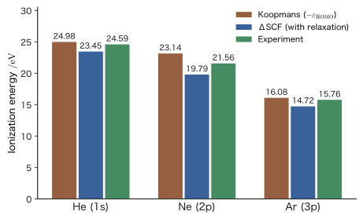

Chapter 36The Hartree–Fock Equations — From Variation to the Fock Operator and Koopmans' Theorem
In the previous chapter (Chapter 35), for a many-electron wave function written as a Slater determinant, we calculated the expectation value of the energy and saw that the interaction between electrons can be written in terms of the Coulomb integral $U_{ab}$ and the exchange integral $J_{ab}$. There, however, the orbitals $\chi_a$ were “given.” For the helium atom, we did the calculation simply by using hydrogen-like 1s orbitals with nuclear charge 2 as they are. But what we really want to know is this: What are the best orbitals, the ones that give the lowest energy? In this chapter we use the variational principle (Chapter 30, Chapter 31) to derive the equations satisfied by the best orbitals—the Hartree–Fock equations.
The form of the resulting equation is surprisingly simple. It is just the Schrödinger equation for one electron, $\hat{F}\chi_a=\varepsilon_a\chi_a$, except that the one-electron Hamiltonian $\hat{h}$ (the kinetic energy and the attraction to the nuclei) is replaced by the Fock operator $\hat{F}$, obtained by adding the average electric field produced by all the other electrons (the Coulomb term) and the exchange term that originates from the Pauli exclusion principle. In classical physics (AD 03), a single particle in a collection of many charged particles could be treated as moving in the potential produced by the other particles. The Hartree–Fock equations are the quantum-mechanical version of this, with two differences. First, the charge distribution that produces the electric field is determined by the electrons' own orbitals $\lvert\chi_b\rvert^2$, so the solution of the equation determines the coefficients of the equation (self-consistency). Second, for electrons with spins in the same direction, an exchange term, which has no counterpart in classical physics, is added.
This equation is the starting point of almost all methods for calculating the electronic structure of materials. Molecular orbital calculations (with Gaussian, ORCA, PySCF, and the like) begin by solving the Hartree–Fock equations, and the Kohn–Sham equations of density functional theory (AD 07) have the form obtained by replacing the exchange term of this equation with a local potential that combines the effects of exchange and correlation. Moreover, by Koopmans' theorem, the resulting orbital energy $\varepsilon_a$ has a value close to “the energy required to remove one electron from that orbital, with its sign changed,” which is fundamental when reading photoelectron spectra. In this chapter we carry out the derivation without skipping a single line and, using numerical values for the He atom and the $\mathrm{H_2}$ molecule, check what is exact and what is approximate.
- Be able to derive the Hartree equations by applying the variational principle to the Hartree product, and to explain the meaning of the mean field (“electron $a$ feels the potential produced by the charge clouds of the other electrons”) and the problem of self-interaction ($17.0\ \mathrm{eV}$ for hydrogen 1s)
- Be able to write the Hartree–Fock integro-differential equations split into the Coulomb term and the exchange term ($\hat{U}_b$, $\hat{J}_b$), and to show that the Coulomb term is local, that the exchange term is nonlocal (the orbitals are interchanged), and that the exchange term acts only between parallel spins
- Be able to understand the meaning of the variation $\delta$ by analogy with the derivative, and to derive $Hc=ESc$ (a generalized eigenvalue problem) by solving the linear variational method with the method of Lagrange multipliers. Be able to explain why $c$ and $c^*$ may be treated as independent variables
- Be able to derive, from the variation of the spin orbitals $\chi_a$, the equations $\hat{F}\chi_a=\sum_b\varepsilon_{ba}\chi_b$ containing the matrix of Lagrange multipliers $\varepsilon_{ba}$, and to diagonalize it by a unitary transformation of the occupied orbitals, reducing it to the canonical Hartree–Fock equations $\hat{F}\chi_a=\varepsilon_a\chi_a$
- Be able to explain the relation (double counting) between the orbital energy $\varepsilon_a=h_{aa}+\sum_b(U_{ab}-J_{ab})$ and the total energy $E_0=\sum_a\varepsilon_a-\tfrac12\sum_{a,b}(U_{ab}-J_{ab})$ (the total energy in the Hartree–Fock approximation, also written $E_{\mathrm{HF}}$)
- Be able to derive Koopmans' theorem $\mathrm{IP}_a\approx-\varepsilon_a$, and to explain, using the values for He ($24.98\ \mathrm{eV}$ versus the experimental value $24.59\ \mathrm{eV}$) and for $\mathrm{H_2}$, why “orbital relaxation” and “electron correlation” almost cancel each other
Source notes: Yasuhide Mochizuki, “Physics Notes: Quantum Mechanics 3,” pp. 57–60.
36.1 From the Hartree Product to the Hartree Equations — Mean Field and Self-Interaction
36.1.1 The starting point — we want to reduce the many-electron problem to a one-electron problem
When there are $N$ electrons, the wave function $\Psi(\bm{x}_1,\dots,\bm{x}_N)$ becomes a function of $3N$ position coordinates (and spin variables); here $\bm{x}_i=(\bm{r}_i,\sigma_i)$ is the pair of the position and the spin of electron $i$ (Chapter 33, Section 33.4). Because of the repulsion $1/r_{ij}$ between electrons, we cannot separate the equation electron by electron (separation of variables), as we saw in Chapter 33. For the roughly $2.5\times10^{24}$ electrons in $1\ \mathrm{cm^3}$ of copper (about $8.5\times10^{22}$ even if we count only the conduction electrons), it is impossible to handle this function itself. What we want is a way to include the effect of the repulsion while keeping the picture of “assigning an orbital to each electron,” as in the 1s and 2p orbitals of the hydrogen atom.
The idea for achieving this is the mean-field approximation. We focus on electron $a$ and do not ask “where the other electrons are right now”; instead, we consider that electron $a$ moves in the electrostatic potential created by the distribution of the probability of finding the other electrons (the charge cloud). In classical physics, this is the same treatment as that of a single charged particle moving in the electric potential created by a collection of other charged particles (Introductory University Physics, Chapter 36, Section 36.8 (in Japanese)). However, the other electrons that make up the charge cloud are also in orbitals determined by the same method, so the $N$ one-electron equations are coupled to one another (Figure 36.1).
In this chapter we write the equations in atomic units (Chapter 33, Section 33.1). Lengths are measured in $a_0$ and energies in $E_{\mathrm h}$, and the electron–electron repulsion is $1/r_{12}$ (with $r_{12}=\lvert\bm{r}_1-\bm{r}_2\rvert$). The electronic Hamiltonian of the $N$-electron system, with the positions of the nuclei denoted $\bm{R}_A$ and the nuclear charges $Z_A$, is
\begin{equation} \hat{H}=\sum_{i=1}^{N}\hat{h}(i)+\sum_{i\lt j}\frac{1}{r_{ij}},\qquad \hat{h}(\bm{r})=-\frac12\nabla^2-\sum_A\frac{Z_A}{\lvert\bm{r}-\bm{R}_A\rvert} \label{eq:36-Ham} \end{equation}where $\hat{h}$ is the one-electron operator that combines the kinetic energy of a single electron and the attraction to all the nuclei, and it is the same as $\hat{h}$ in Chapters 33, 34, and 35. $\hat{h}(i)$ is $\hat{h}$ with its variable set to the coordinate of electron $i$. We also assume that the spin orbitals $\chi_a(\bm{x})=\psi_a(\bm{r})s_a(\sigma)$ ($s_a=\alpha$ or $\beta$) are orthonormal with respect to $\bm{x}=(\bm{r},\sigma)$ ($\braket{\chi_a}{\chi_b}=\delta_{ab}$). The integral $\int\dd\bm{x}$ over $\bm{x}$ means the integral over $\bm{r}$ together with the sum over $\sigma$ (Chapter 33, Section 33.4.1). Below, we denote the indices of the occupied spin orbitals by $a,b,c,\dots=1,\dots,N$, and write the one-electron integral and the two-electron integral as
\begin{equation} h_{aa}=\mel{\chi_a}{\hat{h}}{\chi_a},\qquad \mel{ab}{v}{cd}\equiv\iint\chi_a^*(\bm{x}_1)\chi_b^*(\bm{x}_2)\,\frac{1}{r_{12}}\,\chi_c(\bm{x}_1)\chi_d(\bm{x}_2)\,\dd\bm{x}_1\dd\bm{x}_2 \label{eq:36-int} \end{equation}(here $v\equiv1/r_{12}$ is shorthand, and the first entry of the bra and of the ket refers to electron 1, the second to electron 2). The Coulomb integral and the exchange integral of Chapter 35, Section 35.3 are, in this notation, $U_{ab}=\mel{ab}{v}{ab}$ and $J_{ab}=\mel{ab}{v}{ba}$.
36.1.2 The energy expectation value of a Hartree product
Hartree (1928) took the product wave function in which an orbital is assigned to each electron (the Hartree product of Chapter 33; we wrote it as $\Psi$ in Chapter 33, but here we write it as $\Pi$ to distinguish it from the Slater determinant $\Phi$)
\begin{equation} \Pi(\bm{x}_1,\dots,\bm{x}_N)=\chi_1(\bm{x}_1)\,\chi_2(\bm{x}_2)\cdots\chi_N(\bm{x}_N) \label{eq:36-hprod} \end{equation}as a trial function and considered determining the best orbitals by the variational method. First we find the energy expectation value of $\Pi$. Since $\hat{h}(i)$ acts only on the coordinate of electron $i$, using $\braket{\Pi}{\Pi}=1$ the factors of the other electrons become $\int\lvert\chi_j\rvert^2\dd\bm{x}_j=1$ and disappear, and what remains is
$$ \mel{\Pi}{\hat{h}(i)}{\Pi}=\int\chi_i^*(\bm{x}_i)\,\hat{h}\,\chi_i(\bm{x}_i)\dd\bm{x}_i=h_{ii} $$The two-electron term $1/r_{ij}$ involves only the coordinates of electrons $i,j$, so similarly we obtain
$$ \mel{\Pi}{\tfrac{1}{r_{ij}}}{\Pi}=\iint\lvert\chi_i(\bm{x}_i)\rvert^2\,\frac{1}{r_{ij}}\,\lvert\chi_j(\bm{x}_j)\rvert^2\dd\bm{x}_i\dd\bm{x}_j=\mel{ij}{v}{ij}=U_{ij} $$Therefore, the energy of the Hartree product is the sum of the one-electron terms plus the sum of the Coulomb integrals over all pairs $(a,b)$ of electrons:
\begin{equation} E_{\mathrm H}=\sum_{a=1}^{N}h_{aa}+\sum_{a\lt b}U_{ab}=\sum_{a}h_{aa}+\frac12\sum_{a\ne b}U_{ab} \label{eq:36-EH} \end{equation}(The last form counts each pair $(a,b)$ twice and multiplies by $1/2$.) Since we have not considered the exchange of electrons, the exchange integral $J_{ab}$ does not yet appear.
36.1.3 Variation and the Hartree equations
Taking the normalization $\braket{\chi_a}{\chi_a}=1$ of each spin orbital as the constraint, we look for the $\chi_a$ that minimize $E_{\mathrm H}$. By the method of Lagrange multipliers (University Mathematics, Chapter 6, Section 6.7), we introduce a Lagrange multiplier $\varepsilon_a$ for each constraint, and require that the first variation of the function
$$ L_{\mathrm H}=E_{\mathrm H}-\sum_{a}\varepsilon_a\bigl(\braket{\chi_a}{\chi_a}-1\bigr) $$be $0$. When we change $\chi_a\to\chi_a+\delta\chi_a$ ($\chi_a^*\to\chi_a^*+\delta\chi_a^*$), the changes of the individual terms are as follows. The meaning of the variational calculation, and the reason why we may vary $\delta\chi_a$ and $\delta\chi_a^*$ independently, are explained in detail in Section 36.3.
- The change of $h_{aa}=\mel{\chi_a}{\hat{h}}{\chi_a}$ is $\mel{\delta\chi_a}{\hat{h}}{\chi_a}+\mel{\chi_a}{\hat{h}}{\delta\chi_a}$.
- In $U_{ab}=\iint\lvert\chi_a(\bm{x}_1)\rvert^2\dfrac{1}{r_{12}}\lvert\chi_b(\bm{x}_2)\rvert^2$, the factor $\lvert\chi_a\rvert^2=\chi_a^*\chi_a$ changes by $\delta\chi_a^*\,\chi_a+\chi_a^*\,\delta\chi_a$, so the change of $U_{ab}$ is $\displaystyle\int\dd\bm{x}_1\,\delta\chi_a^*(\bm{x}_1)\Bigl[\int\dfrac{\lvert\chi_b(\bm{x}_2)\rvert^2}{r_{12}}\dd\bm{x}_2\Bigr]\chi_a(\bm{x}_1)+(\text{complex conjugate})$.
- The terms of Eq. \eqref{eq:36-EH} that contain $\chi_a$ are the Coulomb integrals $U_{ab}=U_{ba}$ of the pairs $(a,b)$ ($b\ne a$) that contain $a$, and there are $N-1$ of them. Each pair is counted only once, so for the variation of $\chi_a$ we need to consider only the change of $\sum_{b\ne a}U_{ab}$.
- The change of the normalization term is $\varepsilon_a\bigl(\braket{\delta\chi_a}{\chi_a}+\braket{\chi_a}{\delta\chi_a}\bigr)$.
Here we define the electrostatic potential created by the charge cloud of electron $b$ as
\begin{equation} w_b(\bm{x}_1)\equiv\int\frac{\lvert\chi_b(\bm{x}_2)\rvert^2}{r_{12}}\dd\bm{x}_2=\int\frac{\lvert\psi_b(\bm{r}_2)\rvert^2}{\lvert\bm{r}_1-\bm{r}_2\rvert}\dd\bm{r}_2 \label{eq:36-wb} \end{equation}(the second equality follows from the normalization of the spin function, $\sum_\sigma\lvert s_b(\sigma)\rvert^2=1$; $w_b$ does not depend on the spin and is a function of $\bm{r}_1$ only). This is the repulsive potential energy that a negative charge cloud, spread out at position $\bm{r}_2$ with charge density $\lvert\psi_b\rvert^2$, exerts on an electron (charge $-1$) at position $\bm{r}_1$. We write the operation of multiplying $\chi_a(\bm{x}_1)$ by $w_b(\bm{x}_1)$ as $\hat{U}_b$ (we generalize it in the next section as Definition 36.1): $\bigl(\hat{U}_b\chi_a\bigr)(\bm{x}_1)=w_b(\bm{x}_1)\,\chi_a(\bm{x}_1)$. Then the variation becomes
$$ \delta L_{\mathrm H}=\sum_a\Bigl\{\bra{\delta\chi_a}\Bigl[\hat{h}+\sum_{b\ne a}\hat{U}_b-\varepsilon_a\Bigr]\ket{\chi_a}+(\text{complex conjugate})\Bigr\}=0 $$Since $\delta\chi_a^*$ is arbitrary, the bracket, acting on $\ket{\chi_a}$, must give $0$. These are the Hartree equations.
Formula 36.1: Hartree equations
The spin orbitals that minimize the energy, Eq. \eqref{eq:36-EH}, of the Hartree product, Eq. \eqref{eq:36-hprod}, satisfy the following equations (atomic units):
\begin{equation} \Bigl[\hat{h}+\sum_{b\ne a}\hat{U}_b\Bigr]\chi_a=\varepsilon_a\chi_a\qquad(a=1,\dots,N) \label{eq:36-hartree} \end{equation}That is, electron $a$ is treated as a single electron moving in the potential of the nuclei (the second term of $\hat{h}$) and the potential $\sum_{b\ne a}w_b$ created by the charge clouds of the $N-1$ electrons other than itself.
This equation is the mean-field picture itself, “electron $a$ feels the electrostatic potential created by the charge clouds of the other electrons.” The charge clouds $\lvert\chi_b\rvert^2$ are determined by the other orbitals $\chi_b$, so the $N$ equations are coupled and cannot be solved all at once. For example, one assumes approximate orbitals at first and builds $w_b$, solves the equations to obtain new orbitals, and rebuilds $w_b$ from those orbitals; repeating this procedure, one proceeds until the input and the output agree (that is, until the solution is self-consistent). This procedure is treated in detail in Chapter 37 as the self-consistent field (SCF) method. In 1928, Hartree applied this method to real atoms by numerical integration.
36.1.4 Self-interaction — why $b\ne a$?
The sum in Eq. \eqref{eq:36-hartree} is restricted to $b\ne a$, because an electron does not repel its own charge cloud. In practice, however, this restriction is a nuisance. If we use the common potential $\sum_{b=1}^{N}w_b$ created by the charge clouds of all the electrons (including $b=a$), then all the orbitals become eigenfunctions of the same operator $\hat{h}+\sum_bw_b$, and the treatment becomes far easier. But then electron $a$ feels its own charge cloud. This is called self-interaction. Let us see how large it becomes for the hydrogen atom, which has only one electron.
Example 36.1: Self-interaction of the 1s electron of the hydrogen atom
The electron in the 1s orbital $\psi(r)=e^{-r}/\sqrt{\pi}$ of the hydrogen atom (atomic units) is the only electron present, so there is no electron–electron repulsion. Suppose, nevertheless, that we had left in a term that multiplies by the potential $w(r)$ of its own charge cloud. How much extra energy would appear? (1) Find $w(r)=\displaystyle\int\dfrac{\lvert\psi(\bm{r}')\rvert^2}{\lvert\bm{r}-\bm{r}'\rvert}\dd\bm{r}'$. (2) Find the self-interaction energy $U_{11}=\mel{\psi}{w}{\psi}$ and express it in eV.
Solution. (1) The charge cloud is spherically symmetric, and its density is $\rho(r)=\lvert\psi\rvert^2=e^{-2r}/\pi$. The potential produced by a spherically symmetric charge distribution is the sum of $Q(r)/r$, which is what we get when the charge $Q(r)$ inside the radius $r$ is gathered at the center, and the constant potential $\displaystyle\int_r^\infty4\pi r'\rho(r')\dd r'$ produced by the outer spherical shells (the shell theorem; the same idea as the shielding in Chapter 18, Section 18.3). The inner charge is $\displaystyle Q(r)=\int_0^r4\pi r'^2\rho\,\dd r'=4\int_0^rr'^2e^{-2r'}\dd r'=1-e^{-2r}\bigl(1+2r+2r^2\bigr)$ (integration by parts was carried out twice). The outer contribution is $\displaystyle4\int_r^\infty r'e^{-2r'}\dd r'=e^{-2r}(2r+1)$. Therefore
$$ w(r)=\frac{1-e^{-2r}(1+2r+2r^2)}{r}+e^{-2r}(2r+1)=\frac1r-e^{-2r}\Bigl(\frac1r+1\Bigr). $$As $r\to\infty$, $w\to1/r$ (the potential of a point charge with charge 1); as $r\to0$, expanding $e^{-2r}=1-2r+\cdots$ gives $w(0)=1$, which is finite.
(2) Because of the spherical symmetry,
$$ U_{11}=\int_0^\infty4\pi r^2\rho(r)\,w(r)\,\dd r=4\int_0^\infty r^2e^{-2r}\Bigl[\frac1r-e^{-2r}\Bigl(\frac1r+1\Bigr)\Bigr]\dd r =4\Bigl[\int_0^\infty re^{-2r}\dd r-\int_0^\infty r^2e^{-4r}\dd r-\int_0^\infty re^{-4r}\dd r\Bigr]. $$By $\displaystyle\int_0^\infty r^ne^{-\lambda r}\dd r=n!/\lambda^{n+1}$, the three integrals are $\dfrac14$, $\dfrac{2}{4^3}=\dfrac1{32}$, and $\dfrac1{4^2}=\dfrac1{16}$. Hence $U_{11}=4\Bigl(\dfrac14-\dfrac1{32}-\dfrac1{16}\Bigr)=4\cdot\dfrac{5}{32}=\dfrac58\ E_{\mathrm h}$. Since $1\ E_{\mathrm h}=27.211\ \mathrm{eV}$,
$$ U_{11}=0.625\ E_{\mathrm h}=0.625\times27.211\ \mathrm{eV}=17.0\ \mathrm{eV}. $$This is larger than the ionization energy of the hydrogen atom, $13.6\ \mathrm{eV}$. That is, if the self-interaction is left in, the energy of the 1s orbital of the hydrogen atom, which has only one electron, rises from $\langle\hat{h}\rangle=-\tfrac12=-13.6\ \mathrm{eV}$ to $-13.6+17.0=+3.4\ \mathrm{eV}$, and the electron is no longer bound (this is an estimate made by using the 1s orbital as it is). In general, if $\psi$ is a normalized 1s-type orbital, $U_{11}$ can be written as $5Z/8$ in terms of the nuclear charge $Z$ (Chapter 29, Section 29.2).
This is why Hartree's method imposes $b\ne a$. But then one has to use a different operator $\hat{h}+\sum_{b\ne a}\hat{U}_b$ for each orbital $\chi_a$. There is one more problem: eigenfunctions of different operators are not guaranteed to be mutually orthogonal, and the variation of the Hartree product imposes only the normalization condition, so the resulting orbitals may fail to be orthogonal. These problems are solved by the Hartree–Fock equations, which we derive in the next section. In 1930, Fock and Slater carried out the same variation using, instead of the Hartree product, a Slater determinant, which satisfies the Pauli exclusion principle, as the trial function. As a result, an exchange term is added to the Coulomb term, and moreover, because the self-interaction cancels exactly against the exchange term, the sum can be extended over the whole range, including $b=a$, and all the orbitals become eigenfunctions of a common operator (Section 36.2.4).
Three stages: Hartree, Hartree–Fock, and electron correlation
The ways of incorporating the electron–electron interaction can be arranged, in order of accuracy, into the following three stages. (i) Hartree approximation: a Hartree product is used, and electron $a$ feels only the charge clouds of the other electrons, $\sum_{b\ne a}\hat{U}_b$. The Pauli exclusion principle is used for nothing other than “the number of electrons put into one orbital.” (ii) Hartree–Fock approximation: a Slater determinant is used. To the charge-cloud term $\hat{U}_b$ is added the exchange term $-\hat{J}_b$, which arises because electrons of the same spin cannot approach one another, and the self-interaction also disappears. (iii) Electron correlation: even in the Hartree–Fock approximation, each electron sees only the “average charge cloud” of the other electrons. The effect of electrons avoiding one another from moment to moment (correlation due to the Coulomb repulsion) is not included, and the difference from the exact energy, $E_{\mathrm{corr}}=E_{\mathrm{exact}}-E_{\mathrm{HF}}$, is the correlation energy (Chapter 35, Section 35.7). For the He atom this difference is only $-1.14\ \mathrm{eV}$ (about 1.4% of the total energy $-79\ \mathrm{eV}$), but it is too large to ignore when discussing chemical bonding or magnetism.
36.2 The Hartree–Fock Integro-Differential Equations — Coulomb and Exchange Terms
36.2.1 Putting the exchange term in as a potential
In a system with two or more electrons, in addition to the Coulomb repulsion between electrons (the repulsion between charge clouds), an exchange term acting between electrons with the same spin direction also appears. We learned this from the fact that when the wave function is approximated by a Slater determinant and the energy is computed, then besides the Coulomb integral $U_{ab}$ there appears the exchange integral $J_{ab}$, which survives only when the spins are parallel (Chapter 35). Because the exchange term acts in the direction of lowering the energy, it looks as though an attraction acts between electrons of the same spin. In reality, however, it is not an attraction; the Coulomb repulsion between the electrons is weakened as a consequence of the fact that “electrons of the same spin cannot approach one another (the Fermi hole)” (Chapter 33, Section 33.6).
We therefore consider putting these two effects (the Coulomb term and the exchange term) into a one-electron Schrödinger equation as potentials. What follows is the equation obtained in this way. The rigorous derivation is carried out in Section 36.4, so here we first grasp the form and the meaning of the equation.
36.2.2 The Hartree–Fock integro-differential equations
In atomic units, let the position of nucleus $A$ be $\bm{R}_A$ and its nuclear charge $Z_A$. Using the coordinate $\bm{x}_1=(\bm{r}_1,\sigma_1)$ of electron 1, the equation satisfied by an occupied spin orbital $\chi_a$ is
\begin{align} &\Bigl[-\frac12\nabla_{\bm{r}_1}^2-\sum_A\frac{Z_A}{\lvert\bm{r}_1-\bm{R}_A\rvert}\Bigr]\chi_a(\bm{r}_1,\sigma_1)\notag\\ &\quad+\sum_{b\ne a}\underbrace{\Bigl[\int\dd\bm{r}_2\dd\sigma_2\,\chi_b^*(\bm{r}_2,\sigma_2)\,\frac{1}{r_{12}}\,\chi_b(\bm{r}_2,\sigma_2)\Bigr]}_{\text{Coulomb term (Hartree term)}}\chi_a(\bm{r}_1,\sigma_1)\notag\\ &\quad-\sum_{b\ne a}\underbrace{\Bigl[\int\dd\bm{r}_2\dd\sigma_2\,\chi_b^*(\bm{r}_2,\sigma_2)\,\frac{1}{r_{12}}\,\chi_a(\bm{r}_2,\sigma_2)\Bigr]}_{\text{exchange term}}\chi_b(\bm{r}_1,\sigma_1) =\varepsilon_a\,\chi_a(\bm{r}_1,\sigma_1) \label{eq:36-HFmicro} \end{align}Here the first line is the kinetic energy and the attraction to the nuclei (the one-electron terms), which is the same as in the Hartree equations (Eq. \eqref{eq:36-hartree}). The second line is the Coulomb term: the potential $w_b(\bm{x}_1)$ produced by the charge cloud $\lvert\chi_b\rvert^2$ of another electron $b$, multiplied onto $\chi_a$. The third line is the exchange term, and note that the function outside the brackets is not $\chi_a$ but $\chi_b(\bm{r}_1,\sigma_1)$. The reason is explained in Section 36.2.5 and Section 36.4.3.
Caution: This is not an ordinary Schrödinger equation
Eq. \eqref{eq:36-HFmicro} looks at first sight like a one-electron Schrödinger equation, but it differs from the ordinary Schrödinger equation in three respects. (1) The potential in the equation (the Coulomb term and the exchange term) is determined by the solution itself, $\chi_b$. To find the solution $\chi_a$, one must already know $\chi_b$. That is, the equations are coupled, and they are nonlinear in $\chi$. (2) The exchange term is not an operation that multiplies $\chi_a$ by a function of position; it has the form of the function $K(\bm{x}_1)$, obtained by integrating the product of $\chi_a$ and $\chi_b$ with $1/r_{12}$ as the weight, multiplied onto $\chi_b(\bm{x}_1)$ (Section 36.2.3). Because both differentiation ($\nabla^2$) and integration ($\int\dd\bm{r}_2$) appear in the equation, it is called an integro-differential equation. (3) The exchange term appears only with orbitals $\chi_b$ whose spin is parallel (Section 36.2.6). Note also that in older lectures and literature the Coulomb term is sometimes called the “correlation term,” but today “electron correlation” refers to the effects that the Hartree–Fock approximation misses (the box in Chapter 35, Section 35.2), so this book calls it the Coulomb term (Hartree term).
36.2.3 The Coulomb operator $\hat{U}_b$ and the exchange operator $\hat{J}_b$
The meaning of Eq. \eqref{eq:36-HFmicro} is simple. We have merely put the one-electron terms (the kinetic energy and the potential between the electron and the nuclei) and the two-electron terms (the energy of the Coulomb repulsion between electrons, and the exchange energy) into the Hamiltonian. We write the one-electron terms together as $\hat{h}(\bm{r}_1)$ (Eq. \eqref{eq:36-Ham}). The Coulomb term and the exchange term are also defined as operators, as follows.
Definition 36.1: The Coulomb operator $\hat{U}_b$ and the exchange operator $\hat{J}_b$
For an occupied spin orbital $\chi_b$ and an arbitrary spin-orbital function $\chi(\bm{x})$,
\begin{align} \bigl(\hat{U}_b\chi\bigr)(\bm{x}_1)&\equiv\Bigl[\int\chi_b^*(\bm{x}_2)\frac{1}{r_{12}}\chi_b(\bm{x}_2)\dd\bm{x}_2\Bigr]\chi(\bm{x}_1)=w_b(\bm{x}_1)\,\chi(\bm{x}_1), \label{eq:36-Udef}\\ \bigl(\hat{J}_b\chi\bigr)(\bm{x}_1)&\equiv\Bigl[\int\chi_b^*(\bm{x}_2)\frac{1}{r_{12}}\chi(\bm{x}_2)\dd\bm{x}_2\Bigr]\chi_b(\bm{x}_1) \label{eq:36-Jdef} \end{align}define the operators: $\hat{U}_b$ is called the Coulomb operator, and $\hat{J}_b$ the exchange operator. $\hat{U}_b\chi$ is $\chi$ multiplied by the function $w_b$. For $\hat{J}_b\chi$, one first forms the function inside the brackets of Eq. \eqref{eq:36-Jdef}, $K_b[\chi](\bm{x}_1)\equiv\displaystyle\int\chi_b^*(\bm{x}_2)\dfrac{1}{r_{12}}\chi(\bm{x}_2)\dd\bm{x}_2$, and then multiplies it onto $\chi_b(\bm{x}_1)$: $\bigl(\hat{J}_b\chi\bigr)(\bm{x}_1)=K_b[\chi](\bm{x}_1)\,\chi_b(\bm{x}_1)$. Since $r_{12}=\lvert\bm{r}_1-\bm{r}_2\rvert$ contains $\bm{r}_1$, $K_b[\chi]$ is a function of $\bm{x}_1$, not a constant, and it depends on the values of $\chi$ over all space (it corresponds to the electrostatic potential when $\chi_b^*\chi$ is regarded as a charge density).
Correspondence of notation with other textbooks: $U,J$ versus $J,K$
In many textbooks, such as Szabo–Ostlund, and in AD 07, the Coulomb operator is written $\hat{J}_b$, the exchange operator $\hat{K}_b$, and the two integrals $J_{ab}$ (Coulomb integral) and $K_{ab}$ (exchange integral). This book writes $U$ for Coulomb and $J$ for exchange, so this book's $\hat{U}_b,U_{ab}$ correspond to their $\hat{J}_b,J_{ab}$, and this book's $\hat{J}_b,J_{ab}$ correspond to their $\hat{K}_b,K_{ab}$. When reading alongside other books, note that the meaning of $J$ is swapped. Also, this $J$ is neither the $J$ of the total angular momentum nor the Coulomb integral $\alpha$ of the Hückel method.
These two operators can also be written, using functions of the two coordinates $\bm{x}_1,\bm{x}_2$ (integral kernels), as $\bigl(\hat{U}_b\chi\bigr)(\bm{x}_1)=\chi(\bm{x}_1)\displaystyle\int U_b(\bm{x}_1,\bm{x}_2)\dd\bm{x}_2$ and $\bigl(\hat{J}_b\chi\bigr)(\bm{x}_1)=\displaystyle\int J_b(\bm{x}_1,\bm{x}_2)\,\chi(\bm{x}_2)\dd\bm{x}_2$. The kernels are
\begin{equation} U_b(\bm{x}_1,\bm{x}_2)=\frac{\lvert\chi_b(\bm{x}_2)\rvert^2}{r_{12}},\qquad J_b(\bm{x}_1,\bm{x}_2)=\frac{\chi_b(\bm{x}_1)\,\chi_b^*(\bm{x}_2)}{r_{12}} \label{eq:36-kernel} \end{equation}and each of them depends on both the coordinates $(\bm{r}_1,\sigma_1)$ of electron 1 and the coordinates $(\bm{r}_2,\sigma_2)$ of electron 2. This is why there is a style of writing out all the coordinates, as in $U_b(\bm{r}_1,\bm{r}_2,\sigma_1,\sigma_2)$. However, the coordinates of electron 2 are integrated out and disappear, so the result is a function of the coordinates of electron 1 only.
Using this notation, Eq. \eqref{eq:36-HFmicro} can be written compactly as follows.
Formula 36.2: The Hartree–Fock equations (integro-differential form)
\begin{equation} \Bigl[\hat{h}+\sum_{b\ne a}\hat{U}_b-\sum_{b\ne a}\hat{J}_b\Bigr]\chi_a=\varepsilon_a\,\chi_a\qquad(a=1,\dots,N) \label{eq:36-HFUJ} \end{equation}The expectation values of $\hat{U}_b$ and $\hat{J}_b$ are the two integrals of Chapter 35: $\mel{\chi_a}{\hat{U}_b}{\chi_a}=U_{ab}$ and $\mel{\chi_a}{\hat{J}_b}{\chi_a}=J_{ab}$. Indeed, $\mel{\chi_a}{\hat{U}_b}{\chi_a}=\displaystyle\iint\lvert\chi_a(\bm{x}_1)\rvert^2\dfrac{1}{r_{12}}\lvert\chi_b(\bm{x}_2)\rvert^2=U_{ab}$, and $\mel{\chi_a}{\hat{J}_b}{\chi_a}=\displaystyle\iint\chi_a^*(\bm{x}_1)\chi_b^*(\bm{x}_2)\dfrac{1}{r_{12}}\chi_b(\bm{x}_1)\chi_a(\bm{x}_2)=\mel{ab}{v}{ba}=J_{ab}$. Also, both operators are Hermitian ($\hat{U}_b$ merely multiplies by a real function, and the kernel of $\hat{J}_b$ satisfies $J_b(\bm{x}_2,\bm{x}_1)=J_b(\bm{x}_1,\bm{x}_2)^*$).
36.2.4 The terms with $b=a$ may be included — cancellation of the self-interaction
The sum in Eq. \eqref{eq:36-HFUJ} is restricted to $b\ne a$, but in fact the restriction can be lifted to include $b=a$. Let us actually compute the $b=a$ term. Setting $\chi_b=\chi_a$ and $\chi=\chi_a$ in Eqs. \eqref{eq:36-Udef} and \eqref{eq:36-Jdef}, we obtain
\begin{equation} \bigl(\hat{U}_a\chi_a\bigr)(\bm{x}_1)=\Bigl[\int\chi_a^*(\bm{x}_2)\frac{1}{r_{12}}\chi_a(\bm{x}_2)\dd\bm{x}_2\Bigr]\chi_a(\bm{x}_1)=\bigl(\hat{J}_a\chi_a\bigr)(\bm{x}_1) \label{eq:36-selfcancel} \end{equation}so the two are exactly the same expression. That is, for $b=a$ we have $\hat{U}_a\chi_a-\hat{J}_a\chi_a=0$, and $U-J$ becomes $0$. Therefore, adding the $b=a$ term does not change the equation. This means that the self-interaction $\hat{U}_a$ that we saw in Example 36.1 is exactly canceled by the exchange term $-\hat{J}_a$ (this is why, when there is only one electron, as in the hydrogen atom, the Hartree–Fock equation coincides with the exact Schrödinger equation). In this way we can use the same operator for all the occupied orbitals:
\begin{equation} \Bigl[\hat{h}+\sum_{b=1}^{N}\bigl(\hat{U}_b-\hat{J}_b\bigr)\Bigr]\chi_a=\varepsilon_a\chi_a\qquad(a=1,\dots,N) \label{eq:36-HFall} \end{equation}We call the operator in the brackets on the left-hand side the Fock operator and denote it by $\hat{F}\equiv\hat{h}+\sum_{b=1}^{N}\bigl(\hat{U}_b-\hat{J}_b\bigr)$ (it is formally defined and its properties are examined in Section 36.5.1). Eq. \eqref{eq:36-HFall} then takes the form of an eigenvalue equation, $\hat{F}\chi_a=\varepsilon_a\chi_a$.
However, the cancellation of the $b=a$ term holds only when the operator acts on an occupied spin orbital. If we apply $\sum_b(\hat{U}_b-\hat{J}_b)$ to an unoccupied orbital $\chi$, the same thing does not happen (Section 36.5).
36.2.5 The Coulomb term is local, the exchange term is nonlocal
$\hat{U}_b$ and $\hat{J}_b$ look similar, but they act in very different ways (Figure 36.2). $\hat{U}_b$ merely multiplies $\chi(\bm{x}_1)$ by the value of the function $w_b(\bm{x}_1)$ at that point. The value of the result at $\bm{x}_1$ is determined solely by the value of $\chi$ at $\bm{x}_1$. Such an operator is called local, and it can be written as a potential $w_b$. It has the same character as the electrostatic potential of classical physics.
In contrast, $\hat{J}_b$ first integrates the product of $\chi$ and $\chi_b$ over all space in the coordinates of electron 2, with $1/r_{12}$ as a weight, and so forms the function $K_b[\chi](\bm{x}_1)=\displaystyle\int\chi_b^*(\bm{x}_2)\dfrac{1}{r_{12}}\chi(\bm{x}_2)\dd\bm{x}_2$ of $\bm{x}_1$ (since $r_{12}$ contains $\bm{r}_1$, $K_b$ is not a constant but a function of $\bm{x}_1$). It then multiplies $\chi_b(\bm{x}_1)$ by this function: $\bigl(\hat{J}_b\chi\bigr)(\bm{x}_1)=K_b[\chi](\bm{x}_1)\,\chi_b(\bm{x}_1)$. The output function does not have the shape of $\chi$; it is the shape of $\chi_b$ multiplied by the smooth function $K_b$. This is why, in the exchange term of Eq. \eqref{eq:36-HFmicro}, what stands outside the parentheses is $\chi_b(\bm{r}_1,\sigma_1)$. It reflects the fact that, in the exchange integral $J_{ab}=\mel{ab}{v}{ba}$ of Chapter 35, electrons 1 and 2 had exchanged the orbitals $a,b$. In fact, if we take the variation of the energy $E_0=\sum_ah_{aa}+\tfrac12\sum_{a,b}(U_{ab}-J_{ab})$ (Chapter 35; restated in Section 36.4.1) with respect to $\chi_a^*$, then from $J_{ab}=\mel{ab}{v}{ba}=\displaystyle\iint\chi_a^*(\bm{x}_1)\chi_b^*(\bm{x}_2)\dfrac{1}{r_{12}}\chi_b(\bm{x}_1)\chi_a(\bm{x}_2)$, the coefficient of $\chi_a^*(\bm{x}_1)$ turns out to be $\chi_b(\bm{x}_1)$ multiplied by $\displaystyle\int\chi_b^*(\bm{x}_2)\dfrac{1}{r_{12}}\chi_a(\bm{x}_2)\dd\bm{x}_2$ (Section 36.4). This operator depends on the values of $\chi$ over all space, so it is nonlocal. A nonlocal operator cannot be written in the form $\hat{J}_b\chi=(\text{function of position})\times\chi$. For this reason, the exchange term cannot, in general, be replaced by a single “potential.”
Example 36.2: The 1s$^2$ closed shell of the helium atom — the Hartree–Fock equation becomes a single equation
In the ground state of the helium atom, two electrons occupy the same spatial orbital $\psi(\bm{r})$ (1s type) and differ only in spin: $\chi_1=\psi\alpha$, $\bar{\chi}_1=\psi\beta$. Write out Eq. \eqref{eq:36-HFall} and find the equation for $\psi$.
Solution. For $a=\chi_1=\psi\alpha$, the sum has two terms, $b=\chi_1$ and $b=\bar{\chi}_1$.
$b=\chi_1$: since $b=a$, Eq. \eqref{eq:36-selfcancel} gives $\hat{U}_{\chi_1}\chi_1-\hat{J}_{\chi_1}\chi_1=0$.
$b=\bar{\chi}_1$: the Coulomb operator multiplies by the potential $w_\psi(\bm{r})=\displaystyle\int\dfrac{\lvert\psi(\bm{r}')\rvert^2}{\lvert\bm{r}-\bm{r}'\rvert}\dd\bm{r}'$ of the charge cloud $\lvert\bar{\chi}_1\rvert^2=\lvert\psi\rvert^2\lvert\beta\rvert^2$ (by the spin sum $\sum_\sigma\lvert\beta(\sigma)\rvert^2=1$). Therefore $\hat{U}_{\bar{\chi}_1}\chi_1=w_\psi(\bm{r}_1)\psi(\bm{r}_1)\alpha(\sigma_1)$. In the exchange operator, the parentheses contain an inner product of spin functions:
$$ \bigl(\hat{J}_{\bar{\chi}_1}\chi_1\bigr)(\bm{x}_1)=\Bigl[\int\psi^*(\bm{r}_2)\frac{1}{r_{12}}\psi(\bm{r}_2)\dd\bm{r}_2\ \sum_{\sigma_2}\beta^*(\sigma_2)\alpha(\sigma_2)\Bigr]\psi(\bm{r}_1)\beta(\sigma_1)=0 $$(orthogonality of the spin functions, $\sum_\sigma\beta^*(\sigma)\alpha(\sigma)=0$). Since the spins are antiparallel, the exchange term is $0$.
From the above, $\hat{F}\chi_1=\bigl[\hat{h}+w_\psi(\bm{r}_1)\bigr]\psi(\bm{r}_1)\alpha(\sigma_1)=\varepsilon\,\psi(\bm{r}_1)\alpha(\sigma_1)$. Since the spin function passes through the operator, for the spatial orbital we obtain
\begin{equation} \Bigl[-\frac12\nabla^2-\frac{2}{r}+w_\psi(\bm{r})\Bigr]\psi(\bm{r})=\varepsilon\,\psi(\bm{r}) \label{eq:36-He-eq} \end{equation}The same equation holds for $\bar{\chi}_1$. That is, the HF equation of the He atom reduces to a single one-electron equation for an electron that feels “the attraction of the nucleus (charge $2$; the second term of $\hat{h}=-\tfrac12\nabla^2-2/r$) and the repulsion of the charge cloud of the other electron ($\lvert\psi\rvert^2$).” In this case it also coincides with the Hartree equations (Eq. \eqref{eq:36-hartree}). If we solve this equation repeatedly, recomputing $w_\psi$ each time (Chapter 37), we obtain $\varepsilon=-0.9180\ E_{\mathrm h}$ and the total energy $E=-2.8617\ E_{\mathrm h}=-77.87\ \mathrm{eV}$ (Section 36.5). This is $0.38\ \mathrm{eV}$ lower than the energy $-77.49\ \mathrm{eV}$ obtained in Chapter 31 when the 1s orbital with $Z'=27/16$ was chosen variationally. The exponential-type 1s orbital is merely one member of a family in which the functional form of the orbital is restricted to a single parameter $Z'$. The lowest value among the products $\psi(\bm{r}_1)\psi(\bm{r}_2)$ (with the antisymmetric spin function) in which the spatial orbital $\psi$ is taken to be an arbitrary function is the Hartree–Fock limit, and $-77.87\ \mathrm{eV}$ is equal to it. The procedure for actually finding this value in a basis of Gaussian functions is given in Exercise 36.7 and Chapter 37. The potential felt by one electron and the effective nuclear charge are shown in Figure 36.3.
![Hartree–Fock mean field of the helium atom. (a) One-electron potential energy: the sum (thick brown line) of the nuclear attraction −2/r (dashed line) and the repulsive potential w(r) produced by the charge cloud of the other electron (red; it takes the finite value 1.69 at the origin and approaches 1/r far from the nucleus). (b) The effective nuclear charge Z_eff(r)=2−r w(r) is 2 near the nucleus and 1 far from the nucleus. Z′=27/16, obtained by the variational method, lies between the two. Blue is the radial distribution 4πr²ψ²; the electron is distributed in the region where Z_eff goes from 2 to 1.](figs/ch36_fig36-3.svg)
Related simulator: Variational Principle — Varying the Effective Nuclear Charge to Find the Total Energy of He
Example 36.3: The excited configuration 1s2s ($^3$S) of the helium atom — nonlocality of the exchange operator
Represent the excited state $^3\mathrm{S}$ (1s2s, parallel spins) of the helium atom by the Slater determinant of the two spin orbitals $\chi_a=\psi_{1\mathrm{s}}\alpha$, $\chi_b=\psi_{2\mathrm{s}}\alpha$. (1) Write the form taken by the Fock operator $\hat{F}$ when it acts on $\chi_a$ and $\chi_b$. (2) Using hydrogen-like orbitals (nuclear charge $Z=2$), show that $\hat{J}_a\chi_b$ does not become $0$ even at the node of $\chi_b$ (the point $r=1\ a_0$ where $\psi_{2\mathrm{s}}=0$), and explain that the exchange term cannot be replaced by a single local potential.
Solution. (1) There are two occupied orbitals, and since the spins are parallel, both exchange operators act. In the sum in Eq. \eqref{eq:36-HFall}, the $b=a$ terms cancel as self-interaction (Eq. \eqref{eq:36-selfcancel}), so we have
$$ \hat{F}\chi_a=\bigl[\hat{h}+\hat{U}_b-\hat{J}_b\bigr]\chi_a,\qquad \hat{F}\chi_b=\bigl[\hat{h}+\hat{U}_a-\hat{J}_a\bigr]\chi_b $$Here, by Eq. \eqref{eq:36-Jdef}, $\hat{J}_b\chi_a$ has the form of $\psi_{2\mathrm{s}}(\bm{r}_1)\alpha(\sigma_1)$ multiplied by the function $\displaystyle\int\psi_{2\mathrm{s}}^*(\bm{r}_2)\dfrac{1}{r_{12}}\psi_{1\mathrm{s}}(\bm{r}_2)\dd\bm{r}_2$ of $\bm{r}_1$, and $\hat{J}_a\chi_b$ has the form of $\psi_{1\mathrm{s}}(\bm{r}_1)\alpha(\sigma_1)$ multiplied by the function $\displaystyle\int\psi_{1\mathrm{s}}^*(\bm{r}_2)\dfrac{1}{r_{12}}\psi_{2\mathrm{s}}(\bm{r}_2)\dd\bm{r}_2$ of $\bm{r}_1$.
(2) The spatial part of $\hat{J}_a\chi_b$ is $K(\bm{r}_1)\,\psi_{1\mathrm{s}}(\bm{r}_1)$, where $K(\bm{r}_1)=\displaystyle\int\psi_{1\mathrm{s}}^*(\bm{r}_2)\dfrac{1}{r_{12}}\psi_{2\mathrm{s}}(\bm{r}_2)\dd\bm{r}_2$. Using spherically symmetric orbitals with the radial functions $R_{1\mathrm{s}}=4\sqrt2\,e^{-2r}$, $R_{2\mathrm{s}}=2(1-r)e^{-r}$ ($Z=2$; both normalization integrals are 1), we have $\psi=R/\sqrt{4\pi}$, and from the potential produced by a spherically symmetric distribution (the shell theorem),
$$ K(r)=\frac1r\int_0^rR_{1\mathrm{s}}R_{2\mathrm{s}}\,r'^2\dd r'+\int_r^\infty R_{1\mathrm{s}}R_{2\mathrm{s}}\,r'\dd r' . $$Substituting $R_{1\mathrm{s}}R_{2\mathrm{s}}=8\sqrt2\,(1-r)e^{-3r}$, we evaluate at $r=1$. The integrand $(1-r')r'^2e^{-3r'}$ of the first term equals $\dfrac{\dd}{\dd r'}\Bigl[\dfrac{r'^3e^{-3r'}}{3}\Bigr]$, so
$$ \frac11\int_0^1R_{1\mathrm{s}}R_{2\mathrm{s}}\,r'^2\dd r'=8\sqrt2\Bigl[\frac{r'^3e^{-3r'}}{3}\Bigr]_0^1=\frac{8\sqrt2}{3}e^{-3}. $$For the second term, integration by parts gives $\displaystyle\int_1^\infty r'e^{-3r'}\dd r'=\frac{e^{-3}}{3}+\frac13\int_1^\infty e^{-3r'}\dd r'=\frac{e^{-3}}{3}+\frac{e^{-3}}{9}=\frac49e^{-3}$ and $\displaystyle\int_1^\infty r'^2e^{-3r'}\dd r'=\frac{e^{-3}}{3}+\frac23\int_1^\infty r'e^{-3r'}\dd r'=\frac{e^{-3}}{3}+\frac{8e^{-3}}{27}=\frac{17}{27}e^{-3}$, so
$$ \int_1^\infty R_{1\mathrm{s}}R_{2\mathrm{s}}\,r'\dd r'=8\sqrt2\Bigl(\frac49-\frac{17}{27}\Bigr)e^{-3}=-\frac{40\sqrt2}{27}e^{-3}. $$Adding these two terms, we obtain
$$ K(1)=\Bigl(\frac{8}{3}-\frac{40}{27}\Bigr)\sqrt2\,e^{-3}=\frac{32\sqrt2}{27}e^{-3}=0.0834\ \ne0 . $$Therefore the value of $\bigl(\hat{J}_a\chi_b\bigr)$ at $r=1\ a_0$ is $K(1)\psi_{1\mathrm{s}}(1)\ne0$ ($\psi_{1\mathrm{s}}(1)=4\sqrt2e^{-2}/\sqrt{4\pi}=0.216$). However, $\chi_b$ itself has $\psi_{2\mathrm{s}}(1)=0$. If there were a finite local potential $V$ such that $\hat{J}_a\chi_b=V(\bm{r})\chi_b$, the right-hand side would have to be $0$ at $r=1$, which is a contradiction. Therefore the exchange term cannot be written in the form $V(\bm{r})\chi_b$. If one forcibly defines an “exchange potential” as $V_{\mathrm x}=(\hat{J}_a\chi_b)/\chi_b$, it becomes infinite at the node of $\chi_b$ and, moreover, is a different function for each orbital on which it acts.
Application: Local approximation of the exchange term — the Xα method and density functional theory
The nonlocal exchange term is also heavy in terms of computational cost (even with a Gaussian basis, the number of two-electron integrals grows in proportion to the fourth power of the number of basis functions). Slater (1951) therefore proposed the Xα method, which replaces the exchange term by a local potential determined by the electron density $\rho$ alone (a form proportional to $\rho^{1/3}$). This idea was inherited by the local density approximation (LDA) of the Kohn–Sham equations (AD 07, Chapter 10 (in Japanese)) and became the standard in electronic-structure calculations of solids. On the other hand, in the local approximation the cancellation of the self-interaction is incomplete (self-interaction error). This is one of the reasons why the band gaps of transition-metal oxides and similar materials are underestimated, and hybrid functionals that mix in part of the Hartree–Fock exchange term (B3LYP, HSE06, and so on) are used to remedy this defect.
36.2.6 Spin and the exchange term — “only between parallel spins”
In Section 36.2.1 we stated that the exchange term appears between electrons whose spins point in the same direction. Let us verify this from Eq. \eqref{eq:36-Jdef}. Write the spin orbitals as $\chi_a=\psi_as_a(\sigma)$, $\chi_b=\psi_bs_b(\sigma)$. The spin sum inside the parentheses of the exchange operator is $\sum_{\sigma_2}s_b^*(\sigma_2)s_a(\sigma_2)=\delta_{s_bs_a}$ ($s=\alpha$ or $\beta$), and since the spatial part contains $1/r_{12}$, it can be integrated independently of the spin. Therefore
\begin{equation} \bigl(\hat{J}_b\chi_a\bigr)(\bm{x}_1)=\delta_{s_as_b}\Bigl[\int\psi_b^*(\bm{r}_2)\frac{1}{r_{12}}\psi_a(\bm{r}_2)\dd\bm{r}_2\Bigr]\psi_b(\bm{r}_1)\,s_b(\sigma_1) \label{eq:36-Jspin} \end{equation}holds. $\delta_{s_as_b}$ is $1$ only when the spins are parallel ($s_a=s_b$) and $0$ when they are antiparallel. On the other hand, the Coulomb operator has no restriction on spin: the charge clouds of all occupied orbitals $b$ act on $\chi_a$ regardless of spin ($w_b$ does not depend on spin). In Example 36.2, the exchange term of $b=\bar{\chi}_1$ ($\beta$) vanished for $a=\chi_1$ ($\alpha$). To be precise, it is not that “an attraction acts between different spins,” but rather “between the same spins, the repulsion of the charge clouds is weakened by the amount of the exchange term.”
Example 36.4: The number of terms appearing in the Hartree and HF equations for the Li atom (1s$^2$2s)
The ground-state configuration $1\mathrm{s}^22\mathrm{s}$ of the Li atom is represented by $\chi_1=\psi_{1\mathrm{s}}\alpha$, $\chi_2=\psi_{1\mathrm{s}}\beta$, $\chi_3=\psi_{2\mathrm{s}}\alpha$. For each of the three spin orbitals, write all the terms in $\hat{U}_b$ and $\hat{J}_b$ that appear in the Hartree equations (Eq. \eqref{eq:36-hartree}) and in the Hartree–Fock equations (Eq. \eqref{eq:36-HFUJ}).
Solution. The Coulomb operator appears for all orbitals with $b\ne a$. The exchange operator appears only for those $b\ne a$ whose spin is parallel (Eq. \eqref{eq:36-Jspin}). The spins of the orbitals $\chi_1,\chi_3$ are $\alpha$, and that of $\chi_2$ is $\beta$.
| $a$ | Hartree equations | Hartree–Fock equations |
|---|---|---|
| $\chi_1=1\mathrm{s}\alpha$ | $\hat{h}+\hat{U}_2+\hat{U}_3$ | $\hat{h}+\hat{U}_2+\hat{U}_3-\hat{J}_3$ |
| $\chi_2=1\mathrm{s}\beta$ | $\hat{h}+\hat{U}_1+\hat{U}_3$ | $\hat{h}+\hat{U}_1+\hat{U}_3$ |
| $\chi_3=2\mathrm{s}\alpha$ | $\hat{h}+\hat{U}_1+\hat{U}_2$ | $\hat{h}+\hat{U}_1+\hat{U}_2-\hat{J}_1$ |
For example, in the exchange term for $\chi_1=1\mathrm{s}\alpha$, only $b=\chi_3$ ($\alpha$) remains, while $b=\chi_2$ ($\beta$) vanishes because $\delta_{s_as_b}=0$. For $\chi_2=1\mathrm{s}\beta$, no exchange term appears at all, because there is no other $\beta$ orbital of parallel spin. Therefore, even though $\chi_1$ and $\chi_2$ occupy the same spatial orbital $1\mathrm{s}$, they are eigenfunctions of different operators, and their spatial parts are in general different functions (unrestricted Hartree–Fock, UHF). This is the origin of spin polarization. In the Hartree equations, each of the three operators contains two $\hat{U}$ terms, whereas in the HF equations one exchange term $-\hat{J}$ is added to each of $\chi_1$ and $\chi_3$.
36.2.7 A nonlinear equation — solving it self-consistently
The Fock operator (Section 36.5) $\hat{F}=\hat{h}+\sum_b(\hat{U}_b-\hat{J}_b)$ contains the occupied orbitals $\chi_b$. Therefore Eq. \eqref{eq:36-HFall} is a circular, nonlinear equation: the solution $\{\chi_a\}$ determines the operator, and the eigenfunctions of that operator in turn become the $\{\chi_a\}$. To solve it, we repeat the following iteration until the orbitals no longer change (that is, until they become self-consistent): (i) construct $\hat{F}^{(0)}$ from an initial guess $\{\chi_a^{(0)}\}$ of the orbitals; (ii) solve $\hat{F}^{(0)}\chi=\varepsilon\chi$ and take the $N$ solutions of lowest energy as the new occupied orbitals $\{\chi_a^{(1)}\}$; (iii) construct $\hat{F}^{(1)}$ anew. This is the SCF method; its concrete form combined with basis-function expansion (the Roothaan–Hall equations) is derived in Chapter 37.
36.3 The Variational Principle and the Method of Lagrange Multipliers — A Review of the Linear Variation Method
In Section 36.2, we gave the Hartree–Fock equations first, without justification. In this section and the next, we derive them from the variational principle. First, we review the skeleton of the idea in the simplest case, in which the wave function is expressed as a linear combination of basis functions (the linear variational method). What was done for real coefficients in Chapter 31, Section 31.6 is redone here in the language of complex coefficients and variations (the result $Hc=ESc$ is the same as in Chapter 31, so readers who are already familiar with the notation of variations may read only the box “Why may we treat $c$ and $c^*$ as independent variables?” in 36.3.3 and Figure 36.4 of Example 36.5). The same procedure is used unchanged in the next section to derive the Hartree–Fock equations, where we vary not coefficients but the orbital functions themselves.
36.3.1 The trial function and the variation $\delta$
Suppose a trial function $\tilde{\Psi}$ (assumed to be normalized) is given. The expectation value of its energy is
\begin{equation} E[\tilde{\Psi}]=\mel{\tilde{\Psi}}{\hat{H}}{\tilde{\Psi}} \label{eq:36-Efunc} \end{equation}The square brackets $[\ \ ]$ indicate that $E$ is not a number but a correspondence that assigns one number when a function $\tilde{\Psi}$ is inserted (a functional). Now we add a very small change (a variation) $\delta\tilde{\Psi}$ to the trial function; the expectation value of the energy then changes to $E[\tilde{\Psi}+\delta\tilde{\Psi}]$. Here we do not consider the deviation of $\tilde{\Psi}+\delta\tilde{\Psi}$ from normalization, but simply expand the expectation-value expression $\mel{\tilde{\Psi}+\delta\tilde{\Psi}}{\hat{H}}{\tilde{\Psi}+\delta\tilde{\Psi}}$ as it stands (the normalization condition is treated separately in the next subsection, as a Lagrange multiplier). Since the Hamiltonian $\hat{H}$ is Hermitian, inserting $\delta\tilde{\Psi}$ into both the bra and the ket and expanding gives
\begin{align} E[\tilde{\Psi}+\delta\tilde{\Psi}]&=\mel{\tilde{\Psi}+\delta\tilde{\Psi}}{\hat{H}}{\tilde{\Psi}+\delta\tilde{\Psi}}\notag\\ &=\mel{\tilde{\Psi}}{\hat{H}}{\tilde{\Psi}}+\underbrace{\mel{\delta\tilde{\Psi}}{\hat{H}}{\tilde{\Psi}}+\mel{\tilde{\Psi}}{\hat{H}}{\delta\tilde{\Psi}}}_{\delta E[\tilde{\Psi}]\ \text{(first order in }\delta\tilde{\Psi}\text{)}}+\underbrace{\mel{\delta\tilde{\Psi}}{\hat{H}}{\delta\tilde{\Psi}}}_{\delta\tilde{\Psi}\ \text{(second order)}}\notag\\ &\simeq E[\tilde{\Psi}]+\delta E[\tilde{\Psi}] \label{eq:36-dE} \end{align}(The terms of second order in $\delta\tilde{\Psi}$ have been neglected.)
Intuition: Think of the variation $\delta$ as being like a derivative
This expansion closely resembles the expansion $f(x+\dd x)=f(x)+f'(x)\,\dd x+\tfrac12f''(x)(\dd x)^2+\cdots$ of a function $f(x)$ of one variable. The quantity $\delta\tilde{\Psi}$ is “a small change of the function,” that is, it corresponds to $\dd x$. The first variation $\delta E$ (the term of first order in $\delta\tilde{\Psi}$) corresponds to $f'(x)\,\dd x$. The last term $\mel{\delta\tilde{\Psi}}{\hat{H}}{\delta\tilde{\Psi}}$ contains $\delta\tilde{\Psi}$ twice, so, like $\dd x\cdot\dd x$, it is an infinitesimal of second order and can be neglected compared with the first-order term (approximated as $0$). In this way, the variation $\delta$ may be thought of as being like a derivative (a slope). Just as the slope satisfies $f'(x)=0$ at a point where a function $f(x)$ has a minimum, if $\tilde{\Psi}$ minimizes the energy, then however we move $\tilde{\Psi}$ slightly, in whatever direction, there is no first-order change of the energy:
\begin{equation} \delta E[\tilde{\Psi}]=0 \label{eq:36-dE0} \end{equation}We call this the condition that the first variation is $0$ (it also holds at a maximum or a saddle point, so it is a necessary condition for an extremum).
However, merely writing down the condition \eqref{eq:36-dE0} does not take us any further. This is because it has not yet been decided what $\delta\tilde{\Psi}$ means, namely “which function is moved, and by how much.” We must therefore make concrete what is to be varied. We also need to vary $\tilde{\Psi}$ while keeping its normalization $\braket{\tilde{\Psi}}{\tilde{\Psi}}=1$. To search for an extremum under the constraint of keeping the normalization, we use the method of Lagrange multipliers.
Discussion: Allowing every $\delta\tilde{\Psi}$ gives the Schrödinger equation itself
Consider the function $L=\mel{\tilde{\Psi}}{\hat{H}}{\tilde{\Psi}}-E\bigl(\braket{\tilde{\Psi}}{\tilde{\Psi}}-1\bigr)$, in which the normalization condition is incorporated by means of a Lagrange multiplier $E$. The first-order change for $\tilde{\Psi}\to\tilde{\Psi}+\delta\tilde{\Psi}$ is $\delta L=\mel{\delta\tilde{\Psi}}{(\hat{H}-E)}{\tilde{\Psi}}+\mel{\tilde{\Psi}}{(\hat{H}-E)}{\delta\tilde{\Psi}}$. If $\delta\tilde{\Psi}$ is allowed to be a change of an arbitrary function, then $\delta L=0$ holds only when $\bigl(\hat{H}-E\bigr)\tilde{\Psi}=0$, that is, when the Schrödinger equation $\hat{H}\tilde{\Psi}=E\tilde{\Psi}$ holds (if $\braket{\delta\tilde{\Psi}}{\phi}$ is $0$ for every $\delta\tilde{\Psi}$, then $\phi=0$). This is what we saw in Chapter 30, Section 30.2.6: “minimizing the energy and the Schrödinger equation are the same thing.” The multiplier $E$ becomes the eigenvalue of the equation, that is, the energy itself. The Hartree–Fock approximation is a variation in which the range over which $\tilde{\Psi}$ may be moved is restricted to “functions of the form of a Slater determinant.” Since we make $\delta E=0$ within the restricted range, the equations become simpler than the Schrödinger equation, but in exchange they become an approximation.
36.3.2 A linear combination of basis functions — the trial function and the Lagrange function
Let us decide what is to be varied. We express the trial function as a linear combination of known functions $\phi_1,\dots,\phi_n$ (basis functions)
\begin{equation} \ket{\tilde{\Psi}}=\sum_{i=1}^{n}c_i\ket{\phi_i} \label{eq:36-lcomb} \end{equation}and vary the coefficients $c_i$. We write the number of basis functions as $n$, to distinguish it from the number of electrons $N$. The basis functions need not be orthogonal to one another.
\begin{equation} \braket{\phi_i}{\phi_j}=S_{ij} \label{eq:36-Sij} \end{equation}Here $S_{ij}$ is the overlap integral (Chapter 31, Section 31.6.1). Since the bra is $\bra{\tilde{\Psi}}=\sum_ic_i^*\bra{\phi_i}$, if we write $H_{ij}=\mel{\phi_i}{\hat{H}}{\phi_j}$, the energy expectation value (when the function is normalized) becomes a quadratic form in the coefficients.
\begin{equation} E[\tilde{\Psi}]=\sum_{i=1}^{n}\sum_{j=1}^{n}c_i^*c_j\,\mel{\phi_i}{\hat{H}}{\phi_j}=\sum_{i,j}c_i^*c_j\,H_{ij} \label{eq:36-Ec} \end{equation}Here, the normalization condition of the wave function is
\begin{equation} \braket{\tilde{\Psi}}{\tilde{\Psi}}=\sum_{i=1}^{n}\sum_{j=1}^{n}c_i^*c_j\braket{\phi_i}{\phi_j}=\sum_{i,j}c_i^*c_j\,S_{ij}=1 \label{eq:36-norm} \end{equation}Taking this condition as the constraint, we use the method of Lagrange multipliers (University Mathematics, Chapter 6, Section 6.7) to minimize the following functional (the Lagrange function).
\begin{align} L&=\mel{\tilde{\Psi}}{\hat{H}}{\tilde{\Psi}}-E\bigl(\braket{\tilde{\Psi}}{\tilde{\Psi}}-1\bigr)\notag\\ &=\sum_{i=1}^{n}\sum_{j=1}^{n}c_i^*c_j\,H_{ij}-E\Bigl(\sum_{i=1}^{n}\sum_{j=1}^{n}c_i^*c_j\,S_{ij}-1\Bigr) \label{eq:36-L2} \end{align}$E$ is the Lagrange multiplier. Since it is the basis coefficients $c_i,c_j$ that determine the trial function, the variation of $L$ is given by the variations of the coefficients, $\delta c_i^*,\delta c_j$.
36.3.3 Expansion of $\delta L$ and the secular equation
We find the first-order change $\delta L$ of $L$ when we change $c_i^*\to c_i^*+\delta c_i^*$ and $c_j\to c_j+\delta c_j$. In each term of Eq. \eqref{eq:36-L2}, the change of $c_i^*c_j$ is $\delta c_i^*\,c_j+c_i^*\,\delta c_j$ (the second-order term $\delta c_i^*\delta c_j$ is dropped). The constant $E$ and the last constant term $+E\cdot1$ do not change when the coefficients are changed. (The “$-1$” inside $-E(\cdots-1)$ is a constant, so it vanishes when we take the variation.) Therefore
\begin{align} \delta L&=\sum_{i,j}\delta c_i^*\,c_j\,H_{ij}-E\sum_{i,j}\delta c_i^*\,c_j\,S_{ij}+\sum_{i,j}c_i^*\,\delta c_j\,H_{ij}-E\sum_{i,j}c_i^*\,\delta c_j\,S_{ij}\notag\\ &=\sum_{i=1}^{n}\delta c_i^*\Bigl[\sum_{j=1}^{n}\bigl(c_j\,H_{ij}-E\,c_j\,S_{ij}\bigr)\Bigr] +\sum_{j=1}^{n}\Bigl[\sum_{i=1}^{n}\bigl(c_i^*\,H_{ij}-E\,c_i^*\,S_{ij}\bigr)\Bigr]\delta c_j \label{eq:36-dL} \end{align}is the expansion. The second line is the form obtained by grouping the first and third terms and the second and fourth terms, and factoring out the coefficients of $\delta c_i^*$ (the index $i$ in the left sum) and of $\delta c_j$ (the index $j$ in the right sum). For the coefficients that minimize $L$, we must have $\delta L=0$.
Since $\delta c_i^*$ and $\delta c_j$ are arbitrary infinitesimals, for $\delta L=0$ to hold always, each of the brackets multiplying them must be $0$ (the reason why we may treat $c$ and $c^*$ as independent variables is explained in the next box). From the first bracket we obtain
\begin{equation} \sum_{j=1}^{n}\bigl(H_{ij}-E\,S_{ij}\bigr)c_j=0\quad(i=1,\dots,n),\qquad\text{that is,}\qquad Hc=E\,Sc \label{eq:36-cond1} \end{equation}and from the second bracket, for the index $j$, we obtain
\begin{equation} \sum_{i=1}^{n}\bigl(c_i^*H_{ij}-E\,c_i^*S_{ij}\bigr)=0,\qquad\text{that is,}\qquad \sum_{i=1}^{n}H_{ij}\,c_i^*=E\sum_{i=1}^{n}S_{ij}\,c_i^*\quad(j=1,\dots,n) \label{eq:36-cond2} \end{equation}Eq. \eqref{eq:36-cond2} (in row-vector form, $c^\dagger H=E\,c^\dagger S$) has the same content as the complex conjugate of Eq. \eqref{eq:36-cond1}. Indeed, $H$ and $S$ are Hermitian matrices ($H_{ij}^*=H_{ji}$, $S_{ij}^*=S_{ji}$), and $E$ is real (multiplying Eq. \eqref{eq:36-cond1} from the left by $c^\dagger$ gives $c^\dagger Hc=E\,c^\dagger Sc=E$, and the left-hand side is real because it is the expectation value of a Hermitian matrix), so taking the complex conjugate of Eq. \eqref{eq:36-cond1} gives $\sum_j(H_{ji}-ES_{ji})c_j^*=0$, which is Eq. \eqref{eq:36-cond2} once the names of the indices are exchanged. Thus the two conditions have the same content as the single equation $Hc=ESc$ (a generalized eigenvalue problem), and $E$ is determined by the secular equation $\det(H-ES)=0$ (Chapter 31, Section 31.6.3). The view of these conditions in the plane of the coefficients, for the case of two basis functions, is Figure 36.4 (Example 36.5).
Why may we treat $c$ and $c^*$ as independent variables?
A complex coefficient $c=x+iy$ ($x,y$ real) is a pair $(x,y)$ of two real numbers, and $c$ and $c^*=x-iy$ are complex conjugates of each other, so they appear not to be independent. However, $L$ is a function of the real-valued $x,y$, and the condition for $L$ to be minimal is $\partial L/\partial x=0$ and $\partial L/\partial y=0$. Now, if we define the partial derivatives with $c,c^*$ as the variables by $\dfrac{\partial}{\partial c}=\dfrac12\Bigl(\dfrac{\partial}{\partial x}-i\dfrac{\partial}{\partial y}\Bigr)$ and $\dfrac{\partial}{\partial c^*}=\dfrac12\Bigl(\dfrac{\partial}{\partial x}+i\dfrac{\partial}{\partial y}\Bigr)$, the change of $L$ can be written $\delta L=\dfrac{\partial L}{\partial c}\delta c+\dfrac{\partial L}{\partial c^*}\delta c^*$ (substituting $\delta c=\delta x+i\delta y$, one can check that this returns to $\delta L=\dfrac{\partial L}{\partial x}\delta x+\dfrac{\partial L}{\partial y}\delta y$). Since $L$ is real, $\dfrac{\partial L}{\partial c}=\Bigl(\dfrac{\partial L}{\partial c^*}\Bigr)^*$. Therefore $\delta L=2\,\mathrm{Re}\Bigl[\dfrac{\partial L}{\partial c^*}\delta c^*\Bigr]$, and the condition for this to be $0$ for every complex number $\delta c$ is $\dfrac{\partial L}{\partial c^*}=0$. Then $\dfrac{\partial L}{\partial c}=0$ holds automatically, as its complex conjugate. In other words, “moving the two real numbers $(x,y)$ independently” is the same as “taking partial derivatives with the complex numbers $c$ and $c^*$ as independent variables.” This is why, in Eq. \eqref{eq:36-dL}, we may set the coefficient of $\delta c_i^*$ (Eq. \eqref{eq:36-cond1}) and the coefficient of $\delta c_j$ (Eq. \eqref{eq:36-cond2}) separately equal to $0$.
![Geometry of the linear variation with two basis functions. In the plane with horizontal axis c1 and vertical axis c2, the normalization condition c^T S c = 1 (thick brown ellipse) and the contour lines of the energy c^T H c (gray dashed lines) are drawn. The blue contour (E=−4/7) touches the ellipse at two points in the (1,1) direction, and that is the minimum. The red contour (E=−1/3) touches the ellipse at two points in the (1,−1) direction. At the points of tangency, the gradient of the normalization condition and the gradient of the energy are parallel.](figs/ch36_fig36-4.svg)
Example 36.5: Linear variation with two basis functions — the secular equation solved by hand
For two normalized basis functions $\phi_1,\phi_2$, we have $H_{11}=H_{22}=-0.5$, $H_{12}=H_{21}=-0.3$, $S_{12}=S_{21}=0.4$ (with $S_{11}=S_{22}=1$; the unit is the hartree). (1) Solve the secular equation to find $E$. (2) For each $E$, find the normalized coefficients $c=(c_1,c_2)$ and verify that $E=c^{\mathrm T}Hc$.
Solution. (1) $\det(H-ES)=\begin{vmatrix}-0.5-E&-0.3-0.4E\\-0.3-0.4E&-0.5-E\end{vmatrix}=(0.5+E)^2-(0.3+0.4E)^2=0$. Factorizing with $A^2-B^2=(A-B)(A+B)$ gives
$$ \bigl[(0.5+E)-(0.3+0.4E)\bigr]\bigl[(0.5+E)+(0.3+0.4E)\bigr]=(0.2+0.6E)(0.8+1.4E)=0 $$Hence $E=-\dfrac{0.2}{0.6}=-\dfrac13=-0.3333$ or $E=-\dfrac{0.8}{1.4}=-\dfrac47=-0.5714$.
(2) Substituting $E=-\tfrac47$ into the first row of $(H-ES)c=0$ gives $\bigl(-0.5+\tfrac47\bigr)c_1+\bigl(-0.3+\tfrac47\cdot0.4\bigr)c_2=0.0714\,c_1-0.0714\,c_2=0$, so $c_1=c_2$ (the bonding combination). The normalization $c^{\mathrm T}Sc=c_1^2+c_2^2+2S_{12}c_1c_2=(2+0.8)c_1^2=1$ gives $c_1=c_2=1/\sqrt{2(1+S_{12})}=1/\sqrt{2.8}=0.5976$. Then $c^{\mathrm T}Hc=c_1^2\,(H_{11}+H_{22}+2H_{12})=0.3571\times(-1.6)=-0.5714$, which is indeed equal to $E_+$. For $E=-\tfrac13$, the first row becomes $(-0.5+\tfrac13)c_1+(-0.3+\tfrac13\cdot0.4)c_2=-0.1667\,c_1-0.1667\,c_2=0$, so $c_1=-c_2$ (antibonding). The normalization $(2-0.8)c_1^2=1$ gives $c_1=1/\sqrt{2(1-S_{12})}=0.9129$, and $c^{\mathrm T}Hc=c_1^2(H_{11}+H_{22}-2H_{12})=0.8333\times(-0.4)=-0.3333$.
The bonding level goes down by only $0.0714$ from $H_{11}=-0.5$, whereas the antibonding level goes up by as much as $0.1667$. This asymmetry is due to the overlap $S_{12}\ne0$ (in $E_\pm=(H_{11}\pm H_{12})/(1\pm S_{12})$, the denominators are $1+S_{12}$ and $1-S_{12}$). It is the same phenomenon we saw in Chapter 31, Section 31.7 (bonding and antibonding combinations of two basis functions). Moreover, for the minimum $E_+$, the fact that the ratio of the gradients at the point of tangency, $\nabla(c^{\mathrm T}Hc)\big/\nabla(c^{\mathrm T}Sc)=Hc/Sc$, equals $E_+=-0.5714$ is the meaning of “touching” in Figure 36.4.
How the results of this section lead to the Hartree–Fock equations
Here we had “trial function $=$ linear combination of known basis functions”: what we varied was the coefficients $c_i$, and there was one condition (the normalization of the whole wave function). The result is $Hc=ESc$ ($H$ is the matrix of the Hamiltonian). In the next section we have “trial function $=$ Slater determinant $\Phi_{\mathrm g}$”: what we vary is the orbital functions $\chi_a$ themselves, and the conditions are the orthonormality of the orbitals, $\braket{\chi_a}{\chi_b}=\delta_{ab}$ ($N^2$ of them). Because there are many conditions, there are $N^2$ Lagrange multipliers (a matrix $\varepsilon_{ba}$), and the resulting equation contains, in place of $\hat{H}$, the Fock operator $\hat{F}$, which depends on the orbitals $\chi$. Furthermore, expanding $\chi_a$ in basis functions $\phi_\mu$ gives $FC=SC\varepsilon$ (the Roothaan–Hall equations, Chapter 37), which looks just like $Hc=ESc$. However, since the elements of the matrix $F$ depend on the coefficients $C$, the equation is nonlinear.
36.4 From the Variation of the Spin Orbitals to the Hartree–Fock Equations
The linear variational method of the previous section did not take spin into account, and it varied the coefficients $c_i$ of the basis functions. This time, we take a many-electron wave function that includes spin as the trial function, and we vary the functional form of the spin orbitals $\chi_a(\bm{x})$ themselves. We find the spin orbitals that minimize the expectation value of the energy $E_0=\mel{\Phi_{\mathrm g}}{\hat{H}}{\Phi_{\mathrm g}}$ under constraints, by the method of Lagrange multipliers. Here $\Phi_{\mathrm g}$ is the Slater determinant representing the ground state, built from the $N$ spin orbitals $\chi_1,\dots,\chi_N$ (Chapter 33, Section 33.6, and Chapter 35). Note that in Part X, the Hartree–Fock reference state is written $\ket{\Phi_0}$.
36.4.1 The energy $E_0$ of the trial function
By the Slater–Condon rules seen in Chapter 35 (Section 35.7), the expectation value of the energy of a Slater determinant, when the spin orbitals are orthonormal ($\braket{\chi_a}{\chi_b}=\delta_{ab}$), is
\begin{equation} E_0[\{\chi\}]=\mel{\Phi_{\mathrm g}}{\hat{H}}{\Phi_{\mathrm g}}=\sum_{a=1}^{N}\mel{\chi_a}{\hat{h}}{\chi_a}+\frac12\sum_{a=1}^{N}\sum_{b=1}^{N}\Bigl[\mel{ab}{v}{ab}-\mel{ab}{v}{ba}\Bigr] \label{eq:36-E0} \end{equation}that is, $E_0=\sum_ah_{aa}+\tfrac12\sum_{a,b}(U_{ab}-J_{ab})=\sum_ah_{aa}+\sum_{a\lt b}(U_{ab}-J_{ab})$. It is the sum of the one-electron terms plus the sum, over all pairs $(a,b)$ of electrons, of the Coulomb integral $U_{ab}$ (repulsion) minus the exchange integral $J_{ab}$ (parallel spins only). Since the $a=b$ term vanishes, $U_{aa}-J_{aa}=0$, the sum may be taken over all $N^2$ pairs $a,b$. The energy is a functional $E_0[\{\chi\}]$ of the spin-orbital functions $\chi_1,\dots,\chi_N$.
The derivation of Eq. \eqref{eq:36-E0} (taking the sum over permutations and using orthonormality, so that only $P=Q$ or an interchange of two electrons survives) was carried out in Chapter 35, Section 35.7, Theorem 35.5. The results for the Li atom in Chapter 29 and for the two-electron systems in Chapter 35 are special cases of this formula.
36.4.2 The constraints and the Lagrange function — completing the equation left unfinished
When we vary the spin orbitals $\chi_a$, for the Slater determinant $\Phi_{\mathrm g}$ to be normalized and for Eq. \eqref{eq:36-E0} to hold, the spin orbitals must remain orthonormal. This is the constraint:
\begin{equation} \braket{\chi_a}{\chi_b}=\int\dd\bm{r}\,\dd\sigma\ \chi_a^*(\bm{r},\sigma)\,\chi_b(\bm{r},\sigma)=\delta_{ab}\qquad(a,b=1,\dots,N) \label{eq:36-orth} \end{equation}There are $N\times N$ such conditions. The $N$ conditions with $a=b$ are real conditions (normalization). For each of the $N(N-1)/2$ pairs with $a\lt b$, the complex number $\braket{\chi_a}{\chi_b}=0$ gives two real conditions (its real and imaginary parts), so in total there are $N+N(N-1)=N^2$ real conditions. In the method of Lagrange multipliers, one multiplier is introduced for each condition. Denoting the multipliers by $\varepsilon_{ba}$ (an $N\times N$ matrix $\varepsilon$), the Lagrange function is
\begin{equation} L=E_0[\{\chi\}]-\sum_{a=1}^{N}\sum_{b=1}^{N}\varepsilon_{ba}\Bigl(\braket{\chi_a}{\chi_b}-\delta_{ab}\Bigr) \label{eq:36-L3} \end{equation}This has the same form as $L=\mel{\tilde{\Psi}}{\hat{H}}{\tilde{\Psi}}-E\bigl(\braket{\tilde{\Psi}}{\tilde{\Psi}}-1\bigr)$ in Eq. \eqref{eq:36-L2} of the previous section, and the contents of $E_0$ can be written out explicitly with Eq. \eqref{eq:36-E0}:
$$ L=\sum_{a}\mel{\chi_a}{\hat{h}}{\chi_a}+\frac12\sum_{a,b}\Bigl[\mel{ab}{v}{ab}-\mel{ab}{v}{ba}\Bigr]-\sum_{a,b}\varepsilon_{ba}\bigl(\braket{\chi_a}{\chi_b}-\delta_{ab}\bigr). $$The left-hand side of the condition, $M_{ab}=\braket{\chi_a}{\chi_b}-\delta_{ab}$, is a Hermitian matrix ($M_{ab}^*=M_{ba}$), and $L$ must be real, so we may take the matrix of multipliers $\varepsilon$ to be a Hermitian matrix as well ($\varepsilon_{ba}^*=\varepsilon_{ab}$). (Indeed, the condition for $\sum_{ab}\varepsilon_{ba}M_{ab}=\mathrm{Tr}(\varepsilon M)$ to be real for every Hermitian matrix $M$ is the Hermiticity of $\varepsilon$.)
36.4.3 Computing the variation term by term
We change $\chi_a\to\chi_a+\delta\chi_a$ and $\chi_a^*\to\chi_a^*+\delta\chi_a^*$ (as in Section 36.3, $\delta\chi_a^*$ and $\delta\chi_a$ can be varied independently). We compute the first-order change of each term of $\delta L$, one at a time. Along the way, we use the facts that the names of the integration variables of electron 1 and electron 2 may be interchanged, that $1/r_{12}=1/r_{21}$, and that the names of the indices $a,b$ may be interchanged (the indices inside a sum are dummy indices).
(i) One-electron term The change of $\sum_a\mel{\chi_a}{\hat{h}}{\chi_a}$ is $\sum_a\bigl[\mel{\delta\chi_a}{\hat{h}}{\chi_a}+\mel{\chi_a}{\hat{h}}{\delta\chi_a}\bigr]$.
(ii) Coulomb term For a single $(a,b)$ in $\tfrac12\sum_{a,b}\mel{ab}{v}{ab}$, the four places $\chi_a^*,\chi_b^*,\chi_a,\chi_b$ each change, so
$$ \delta\mel{ab}{v}{ab}=\mel{\delta a\,b}{v}{ab}+\mel{a\,\delta b}{v}{ab}+\mel{ab}{v}{\delta a\,b}+\mel{ab}{v}{a\,\delta b} $$(where $\delta a$ is shorthand for $\delta\chi_a$). The second term takes the same form as the first when we rename electrons 1 and 2 ($1/r_{12}$ is symmetric) and then rename $a\leftrightarrow b$ inside the sum: $\sum_{a,b}\mel{a\,\delta b}{v}{ab}=\sum_{a,b}\mel{b\,\delta a}{v}{ba}=\sum_{a,b}\mel{\delta a\,b}{v}{ab}$. Similarly, the fourth term is equal to the third. Therefore, these terms cancel against the coefficient $\tfrac12$, and we obtain
$$ \delta\Bigl[\tfrac12\sum_{a,b}\mel{ab}{v}{ab}\Bigr]=\sum_{a,b}\Bigl[\mel{\delta a\,b}{v}{ab}+\mel{ab}{v}{\delta a\,b}\Bigr]. $$Writing each term in integral form, $\mel{\delta a\,b}{v}{ab}=\displaystyle\int\delta\chi_a^*(\bm{x}_1)\Bigl[\int\chi_b^*(\bm{x}_2)\dfrac{1}{r_{12}}\chi_b(\bm{x}_2)\dd\bm{x}_2\Bigr]\chi_a(\bm{x}_1)\dd\bm{x}_1=\mel{\delta\chi_a}{\hat{U}_b}{\chi_a}$ (Definition 36.1). Also, $\mel{ab}{v}{\delta a\,b}=\mel{\chi_a}{\hat{U}_b}{\delta\chi_a}$.
(iii) Exchange term Likewise for $\tfrac12\sum_{a,b}\mel{ab}{v}{ba}$: of the changes at the four places, the two terms containing $\delta b$ become equal to the two terms containing $\delta a$ under $a\leftrightarrow b$ and the renaming of electrons 1 and 2, so that
$$ \delta\Bigl[\tfrac12\sum_{a,b}\mel{ab}{v}{ba}\Bigr]=\sum_{a,b}\Bigl[\mel{\delta a\,b}{v}{ba}+\mel{ab}{v}{b\,\delta a}\Bigr] $$holds. The first term is $\mel{\delta a\,b}{v}{ba}=\displaystyle\iint\delta\chi_a^*(\bm{x}_1)\chi_b^*(\bm{x}_2)\dfrac{1}{r_{12}}\chi_b(\bm{x}_1)\chi_a(\bm{x}_2)=\displaystyle\int\delta\chi_a^*(\bm{x}_1)\Bigl[\int\chi_b^*(\bm{x}_2)\dfrac{1}{r_{12}}\chi_a(\bm{x}_2)\dd\bm{x}_2\Bigr]\chi_b(\bm{x}_1)\dd\bm{x}_1=\mel{\delta\chi_a}{\hat{J}_b}{\chi_a}$ (Definition 36.1), and the second term is $\mel{\chi_a}{\hat{J}_b}{\delta\chi_a}$. The function outside the brackets becomes $\chi_b(\bm{x}_1)$ because, for the bra's $\chi_a^*(\bm{x}_1)$, it is $\chi_b(\bm{x}_1)$ that sits at the position of electron 1 in the ket.
(iv) Orthonormality term The change of $\sum_{a,b}\varepsilon_{ba}\braket{\chi_a}{\chi_b}$ is $\sum_{a,b}\varepsilon_{ba}\bigl[\braket{\delta\chi_a}{\chi_b}+\braket{\chi_a}{\delta\chi_b}\bigr]$. The second term is $\varepsilon_{ba}\braket{\chi_a}{\delta\chi_b}=\varepsilon_{ba}\braket{\delta\chi_b}{\chi_a}^*=\bigl[\varepsilon_{ab}\braket{\delta\chi_b}{\chi_a}\bigr]^*$ (we used $\varepsilon_{ba}^*=\varepsilon_{ab}$), and when the indices are relabeled it becomes $\bigl[\sum_{a,b}\varepsilon_{ba}\braket{\delta\chi_a}{\chi_b}\bigr]^*$, so it is the complex conjugate of the first term.
Putting these four together, and using the Fock operator (to be defined formally in Section 36.5.1)
\begin{equation} \hat{F}\equiv\hat{h}+\sum_{b=1}^{N}\bigl(\hat{U}_b-\hat{J}_b\bigr) \label{eq:36-Fock} \end{equation}the first-order change of $L$ is
\begin{equation} \delta L=\sum_{a=1}^{N}\Bigl\{\Bigl\langle\delta\chi_a\Bigm|\hat{F}\chi_a-\sum_{b=1}^{N}\varepsilon_{ba}\chi_b\Bigr\rangle+(\text{complex conjugate})\Bigr\} \label{eq:36-dL3} \end{equation}where we have used the fact that $\hat{U}_b,\hat{J}_b$ are Hermitian, so that $\mel{\chi_a}{\hat{F}}{\delta\chi_a}=\mel{\delta\chi_a}{\hat{F}}{\chi_a}^*$.
36.4.4 The condition for an extremum — the Hartree–Fock equations
$\delta L=0$ must hold for arbitrary $\delta\chi_a^*$ (as in Section 36.3, $\delta\chi_a^*$ and $\delta\chi_a$ may be varied independently). What is required is that the expression inside the left-hand bracket of Eq. \eqref{eq:36-dL3} be $0$, that is,
\begin{equation} \hat{F}\chi_a=\sum_{b=1}^{N}\varepsilon_{ba}\,\chi_b\qquad(a=1,\dots,N) \label{eq:36-HFmult} \end{equation}is the condition (the complex-conjugate term merely gives the complex conjugate of the same equation and adds no new condition). These are the Hartree–Fock equations obtained from the variation of the spin orbitals. Compare them with $Hc=ESc$ of the previous section. The $H$ of the linear variation corresponds to the Fock operator $\hat{F}$, the Lagrange multiplier $E$ to the matrix $\varepsilon_{ba}$, and the coefficient vector $c$ to the spin orbital $\chi_a$. The right-hand side has the form that the result of acting on $\chi_a$ is a linear combination of the occupied orbitals $\chi_1,\dots,\chi_N$.
36.4.5 Unitary transformation of the occupied orbitals and canonical orbitals
Eq. \eqref{eq:36-HFmult} has off-diagonal terms $\varepsilon_{ba}$ ($b\ne a$) on the right-hand side, so it is not in the form of a one-electron eigenvalue equation. However, using the fact that mixing the occupied orbitals among themselves does not change the state (Chapter 33, Section 33.6.5), we can make $\varepsilon$ diagonal.
Derivation: Diagonalizing $\varepsilon$ to reach the canonical Hartree–Fock equations
Mix the occupied spin orbitals with an $N\times N$ unitary matrix $W$ ($W^\dagger W=1$): $\chi_a'=\sum_b\chi_bW_{ba}$.
(i) By the property of determinants $\det(MW)=\det M\det W$, the Slater determinant becomes $\Phi_{\mathrm g}'=\det W\cdot\Phi_{\mathrm g}$. Since $\lvert\det W\rvert=1$, only a phase factor is attached, and it represents the same state. Therefore the energy $E_0$ does not change either.
(ii) The operators $\sum_b\hat{U}_b$ and $\sum_b\hat{J}_b$ do not change either. Indeed, $\sum_b\hat{U}_b$ can be written with the potential $\sum_bw_b(\bm{x}_1)=\displaystyle\int\dfrac{\rho(\bm{x}_2,\bm{x}_2)}{r_{12}}\dd\bm{x}_2$, and $\sum_b\hat{J}_b$ with the integral kernel $\dfrac{\rho(\bm{x}_1,\bm{x}_2)}{r_{12}}$, and both are determined solely by the one-electron density matrix $\rho(\bm{x}_1,\bm{x}_2)=\sum_b\chi_b(\bm{x}_1)\chi_b^*(\bm{x}_2)$. Yet, as $\sum_b\chi_b'(\bm{x}_1)\chi_b'^*(\bm{x}_2)=\sum_{b,c,d}\chi_c(\bm{x}_1)W_{cb}W_{db}^*\chi_d^*(\bm{x}_2)=\sum_{c,d}\chi_c(\bm{x}_1)\bigl(WW^\dagger\bigr)_{cd}\chi_d^*(\bm{x}_2)=\rho(\bm{x}_1,\bm{x}_2)$ ($WW^\dagger=1$) shows, the density matrix does not change. Therefore the Fock operator $\hat{F}$ does not change when $\{\chi_a\}$ is replaced by $\{\chi_a'\}$.
(iii) Under the operation of taking linear combinations of the occupied orbitals, the two sides of Eq. \eqref{eq:36-HFmult} become $\hat{F}\chi_a'=\sum_b\hat{F}\chi_bW_{ba}=\sum_{b,c}\varepsilon_{cb}\chi_cW_{ba}$. Substituting $\chi_c=\sum_d\chi_d'\,(W^\dagger)_{dc}$ (the inverse of $\chi'=\chi W$), we obtain $\hat{F}\chi_a'=\sum_d\chi_d'\bigl(W^\dagger\varepsilon W\bigr)_{da}$: the form of the equation is unchanged, and only the matrix changes, $\varepsilon\to\varepsilon'=W^\dagger\varepsilon W$.
(iv) Since $\varepsilon$ is a Hermitian matrix, it can be diagonalized by a suitable unitary matrix $W$: $W^\dagger\varepsilon W=\mathrm{diag}(\varepsilon_1,\dots,\varepsilon_N)$ (the diagonalization in University Mathematics, Chapter 12, Section 12.1). If we replace the orbitals using this $W$, then by (ii) $\hat{F}$ stays the same, and by (iii) $\varepsilon'$ becomes diagonal, so the equation becomes a one-electron eigenvalue equation.
∎
Theorem 36.1: Canonical Hartree–Fock equations
The spin orbitals that make the energy $E_0$ of the Slater determinant $\Phi_{\mathrm g}$ stationary under the orthonormality $\braket{\chi_a}{\chi_b}=\delta_{ab}$ of the spin orbitals satisfy, with a suitable choice of the unitary transformation of the occupied orbitals, the following equation:
\begin{equation} \hat{F}\chi_a=\varepsilon_a\chi_a,\qquad\hat{F}=\hat{h}+\sum_{b=1}^{N}\bigl(\hat{U}_b-\hat{J}_b\bigr)\qquad(a=1,\dots,N) \label{eq:36-canon} \end{equation}Orbitals of this form are called canonical orbitals, and $\varepsilon_a$ are called the orbital energies. This is the same as Eq. \eqref{eq:36-HFall}, given earlier in Section 36.2.
Discussion: A unitary transformation is “just the same state written in terms of different orbitals”
A set of orbitals whose matrix $\varepsilon$ is off-diagonal (for example, orbitals localized on each bond of a molecule) also gives the same Slater determinant, the same energy, and the same $\hat{F}$. The canonical orbitals are those among them that are eigenfunctions of $\hat{F}$. Whether the orbitals turn out to be orbitals that have symmetry and are spread over the whole molecule (molecular orbitals) or orbitals localized on each bond is not a difference in physical content but a difference in the choice of the unitary transformation. However, only the canonical orbitals can be tied to the values of the individual orbital energies $\varepsilon_a$ and to the “removal of an electron from an orbital” in Koopmans' theorem (Section 36.5).
The derivation in this section (the matrix of Lagrange multipliers, the unitary transformation, and the canonical equations) is also written out in AD 07, Chapter 5 (in Japanese) (Section 5.6), in the convention that denotes the exchange operator by $\hat{K}_b$. The decomposition of the values into Coulomb and exchange integrals corresponds to AD 05, Chapter 9.
Example 36.6: Mixing two occupied orbitals — $\varepsilon$ changes to $W^\dagger\varepsilon W$
Two occupied orbitals $\chi_1,\chi_2$ with the same spin $\alpha$ are canonical and satisfy $\hat{F}\chi_1=\varepsilon_1\chi_1$, $\hat{F}\chi_2=\varepsilon_2\chi_2$. Mix them to form $\chi_1'=(\chi_1+\chi_2)/\sqrt2$, $\chi_2'=(\chi_1-\chi_2)/\sqrt2$. (1) How is $\Phi_{\mathrm g}'$ related to $\Phi_{\mathrm g}$? (2) Does the electron density $\sum_b\lvert\chi_b\rvert^2$ change? (3) Expand $\hat{F}\chi_1'$ in terms of $\chi_1',\chi_2'$.
Solution. (1) The transformation matrix is $W=\dfrac{1}{\sqrt2}\begin{pmatrix}1&1\\1&-1\end{pmatrix}$ (corresponding to $\chi_1'=\chi_1W_{11}+\chi_2W_{21}$, $\chi_2'=\chi_1W_{12}+\chi_2W_{22}$), with $W^\dagger W=1$ and $\det W=\dfrac12(-1-1)=-1$. Hence $\Phi_{\mathrm g}'=-\Phi_{\mathrm g}$ (only the sign changes; $\lvert\det W\rvert=1$).
(2) $\lvert\chi_1'\rvert^2+\lvert\chi_2'\rvert^2=\tfrac12\bigl(\lvert\chi_1+\chi_2\rvert^2+\lvert\chi_1-\chi_2\rvert^2\bigr)=\tfrac12\bigl(2\lvert\chi_1\rvert^2+2\lvert\chi_2\rvert^2\bigr)=\lvert\chi_1\rvert^2+\lvert\chi_2\rvert^2$ (the cross terms $\pm2\mathrm{Re}(\chi_1^*\chi_2)$ cancel each other). Since the electron density does not change, $\sum_b\hat{U}_b$ does not change either.
(3) $\hat{F}\chi_1'=\dfrac{1}{\sqrt2}\bigl(\varepsilon_1\chi_1+\varepsilon_2\chi_2\bigr)$. Substituting $\chi_1=(\chi_1'+\chi_2')/\sqrt2$, $\chi_2=(\chi_1'-\chi_2')/\sqrt2$, we get
$$ \hat{F}\chi_1'=\frac12\bigl(\varepsilon_1+\varepsilon_2\bigr)\chi_1'+\frac12\bigl(\varepsilon_1-\varepsilon_2\bigr)\chi_2' . $$That is, $\varepsilon'=W^\dagger\varepsilon W=\dfrac12\begin{pmatrix}\varepsilon_1+\varepsilon_2&\varepsilon_1-\varepsilon_2\\\varepsilon_1-\varepsilon_2&\varepsilon_1+\varepsilon_2\end{pmatrix}$ is off-diagonal. However, its eigenvalues remain $\varepsilon_1,\varepsilon_2$, and diagonalizing it brings us back to the original canonical orbitals (when $\varepsilon_1=\varepsilon_2$, $\varepsilon'$ is also diagonal, and mixing does not change the form of the equation).
36.4.6 Relation to Brillouin's theorem
Eq. \eqref{eq:36-HFmult} has the same content as Brillouin's theorem of Chapter 35, Section 35.5. Let $\Phi_a^r$ denote the Slater determinant of the one-electron excitation in which the occupied orbital $\chi_a$ is replaced by an unoccupied orbital (virtual orbital) $\chi_r$. By the Slater–Condon rules, we have
$$ \mel{\Phi_{\mathrm g}}{\hat{H}}{\Phi_a^r}=h_{ar}+\sum_b\bigl[\mel{ab}{v}{rb}-\mel{ab}{v}{br}\bigr]=\mel{\chi_a}{\hat{F}}{\chi_r} $$(We used $\mel{ab}{v}{rb}=\mel{\chi_a}{\hat{U}_b}{\chi_r}$ and $\mel{ab}{v}{br}=\mel{\chi_a}{\hat{J}_b}{\chi_r}$.) However, by Eq. \eqref{eq:36-HFmult}, $\mel{\chi_r}{\hat{F}}{\chi_a}=\sum_b\varepsilon_{ba}\braket{\chi_r}{\chi_b}=0$ (the virtual orbital $\chi_r$ is orthogonal to the occupied orbitals $\chi_b$), and $\mel{\chi_a}{\hat{F}}{\chi_r}$ is its complex conjugate, so it is $0$. That is, for a Hartree–Fock solution, the matrix element of the Hamiltonian between the ground-state Slater determinant $\Phi_{\mathrm g}$ and the one-electron-excitation Slater determinant $\Phi_a^r$ is $0$. This is just a restatement of the variational condition: even if we mix a little of $\Phi_a^r$ into $\Phi_{\mathrm g}$, there is no first-order change in the energy ($\delta E_0=0$).
Numerical check: $\partial E_0/\partial\chi_a=2\hat{F}\chi_a$, and the outer function of the exchange term is $\chi_b$
The result of the derivation can be checked numerically in a small model. We discretize space into five lattice sites (each lattice site is one basis function; an orbital is represented by five components $\chi_a(i)$), and specify a real one-electron matrix $h$ and the electron–electron repulsion $V_{ij}=1/(1+\lvert i-j\rvert)$ between lattice sites $i,j$. There are three spin orbitals ($\alpha,\alpha,\beta$), whose components are chosen at random. For real orbitals, Eq. \eqref{eq:36-E0} reads $E_0=\sum_a\chi_a^{\mathrm T}h\chi_a+\tfrac12\sum_{a,b}\bigl[(\chi_a^2)^{\mathrm T}V\chi_b^2-\delta_{s_as_b}\sum_{ij}\chi_a(i)\chi_b(i)V_{ij}\chi_a(j)\chi_b(j)\bigr]$ ($\chi_a^2$ is the componentwise square). The change in $E_0$ when the component $\chi_a(i)$ is shifted slightly is $\delta E_0=2\mel{\delta\chi_a}{\hat{F}}{\chi_a}$, so the gradient $\partial E_0/\partial\chi_a(i)$ should be equal to $2\bigl(\hat{F}\chi_a\bigr)(i)$. In this model, the exchange term is the function $K(i)=\delta_{s_as_b}\sum_jV_{ij}\chi_b(j)\chi_a(j)$ multiplied by the outer function $\chi_b(i)$.
import numpy as np
n = 5
i, j = np.indices((n, n))
h = np.diag(-np.arange(n, 0, -1.0)) - 0.5*(abs(i-j) == 1) # one-electron matrix
V = 1.0/(1.0 + abs(i-j)) # electron–electron repulsion V_ij
spin = np.array([0, 0, 1]) # α, α, β
X = np.random.default_rng(0).normal(size=(3, n)) # orbitals chi_a(i)
def E0(X):
e = sum(x @ h @ x for x in X)
for a in range(3):
for b in range(3):
U = (X[a]**2) @ V @ (X[b]**2)
J = (X[a]*X[b]) @ V @ (X[a]*X[b]) * (spin[a] == spin[b])
e += 0.5*(U - J)
return e
def fock(X, a, outer): # F chi_a. The outer function of the exchange term is X[b] (outer='b') or X[a] ('a')
out = h @ X[a]
for b in range(3):
out = out + (V @ X[b]**2) * X[a] # Coulomb term
K = V @ (X[b]*X[a]) * (spin[a] == spin[b]) # function K(i) of the exchange term
out = out - K * (X[b] if outer == 'b' else X[a])
return out
def grad(X, eps=1e-6): # dE_0/dchi_a(i) (central difference)
g = np.zeros_like(X)
for a in range(3):
for k in range(n):
P = X.copy(); P[a, k] += eps
M = X.copy(); M[a, k] -= eps
g[a, k] = (E0(P) - E0(M))/(2*eps)
return g
G = grad(X)
for outer in ('b', 'a'):
print(outer, [np.abs(G[a] - 2*fock(X, a, outer)).max() for a in range(3)])
t = 0.7 # mix two orbitals of the same spin (α) by a rotation
Y = X.copy()
Y[0] = np.cos(t)*X[0] + np.sin(t)*X[1]
Y[1] = -np.sin(t)*X[0] + np.cos(t)*X[1]
print(E0(X), E0(Y))When we run it, for the $\hat{F}$ with $\chi_b$ as the outer function of the exchange term (outer='b'), the difference from the gradient is about $10^{-8}$ for all three orbitals (within the finite-difference error), and the gradient agrees with $2\hat{F}\chi_a$. If we make the outer function $\chi_a$ instead (outer='a'), the difference is as large as $1.18$ for the two $\alpha$-spin orbitals, and the two do not agree (the $\beta$ orbital has no parallel-spin partner and no exchange term appears, so the difference is about $10^{-8}$ in either case). Also, when we mix the two orbitals of the same spin ($\alpha$) by the rotation $\chi_1'=\chi_1\cos t+\chi_2\sin t$, $\chi_2'=-\chi_1\sin t+\chi_2\cos t$ (the real version of a unitary transformation) and recompute $E_0$, it stays $-13.401576\ldots$ at $t=0.7$: the values before and after the transformation agree within rounding error.
36.5 The Fock Operator and Orbital Energies — Koopmans' Theorem
36.5.1 The Fock operator
Let us give a formal name to the operator $\hat{F}$ obtained in Section 36.4.
Definition 36.2: Fock operator
The one-electron operator built from the occupied spin orbitals $\chi_1,\dots,\chi_N$,
\begin{equation} \hat{F}\equiv\hat{h}+\sum_{b=1}^{N}\bigl(\hat{U}_b-\hat{J}_b\bigr) \label{eq:36-Fdef} \end{equation}is called the Fock operator. Here $\hat{h}$ consists of the kinetic energy and the attraction to the nuclei, $\hat{U}_b$ is the Coulomb operator, and $\hat{J}_b$ is the exchange operator (Definition 36.1). So that the correspondence with the Roothaan–Hall equations (Chapter 37), which contain the matrix $F$, is easy to see, this book denotes the operator by $\hat{F}$.
The Fock operator is the “effective Hamiltonian of a single electron” in the Hartree–Fock approximation. Let us confirm its properties.
- Hermitian: Since $\hat{h}$, $\hat{U}_b$, and $\hat{J}_b$ are all Hermitian, $\hat{F}$ is also Hermitian; its eigenvalues $\varepsilon$ are real, and eigenfunctions with different eigenvalues are orthogonal.
- Depends on the occupied orbitals: The $\hat{U}_b$ and $\hat{J}_b$ in $\hat{F}$ are built from the occupied orbitals $\{\chi_b\}$, and the $\{\chi_b\}$ are in turn eigenfunctions of $\hat{F}$. The operator depends on its own eigenfunctions. This self-reference is the source of the nonlinearity, and it is the reason the equations are solved by the SCF method.
- Common to all occupied orbitals: As we saw in Section 36.2.4, thanks to the cancellation of the $b=a$ term, there is no need to use a different operator for each orbital, as in the Hartree equations; all $N$ occupied orbitals are eigenfunctions of the same operator $\hat{F}$.
- Can also act on functions other than the occupied orbitals: As a single operator, $\hat{F}$ can act on any function. Its eigenfunctions are the $N$ occupied orbitals, counted from the low-energy side, and the infinitely many virtual orbitals (orbitals that are not occupied) that follow above them.
36.5.2 Orbital energies $\varepsilon_a$ and the total energy $E_0$
Multiplying both sides of the canonical equation \eqref{eq:36-canon} from the left by $\bra{\chi_a}$ (with $\braket{\chi_a}{\chi_a}=1$) gives $\varepsilon_a=\mel{\chi_a}{\hat{F}}{\chi_a}$. Using $\mel{\chi_a}{\hat{U}_b}{\chi_a}=U_{ab}$ and $\mel{\chi_a}{\hat{J}_b}{\chi_a}=J_{ab}$ (Section 36.2.3), we obtain
\begin{equation} \varepsilon_a=h_{aa}+\sum_{b=1}^{N}\bigl(U_{ab}-J_{ab}\bigr) \label{eq:36-eps} \end{equation}The orbital energy $\varepsilon_a$ is the energy $h_{aa}$ (the kinetic energy of electron $a$ plus the energy of its attraction to the nuclei) with the interaction $\sum_b(U_{ab}-J_{ab})$ between electron $a$ and all the other electrons added to it (the $b=a$ term is $U_{aa}-J_{aa}=0$, so no interaction with itself enters). On the other hand, the total energy is, from Eq. \eqref{eq:36-E0},
\begin{equation} E_0=\sum_{a}h_{aa}+\frac12\sum_{a,b}\bigl(U_{ab}-J_{ab}\bigr) \label{eq:36-E0b} \end{equation}Summing Eq. \eqref{eq:36-eps} over $a$ gives $\sum_a\varepsilon_a=\sum_ah_{aa}+\sum_{a,b}(U_{ab}-J_{ab})$, so the interaction terms between electrons appear twice as large as in the total energy. We can therefore state the following.
Formula 36.3: Sum of the orbital energies and the total energy
\begin{equation} E_0=\sum_{a=1}^{N}\varepsilon_a-\frac12\sum_{a=1}^{N}\sum_{b=1}^{N}\bigl(U_{ab}-J_{ab}\bigr) \label{eq:36-EHF} \end{equation}The sum of the orbital energies $\sum_a\varepsilon_a$ is not the total energy. The interaction $U_{ab}-J_{ab}$ between electron $a$ and electron $b$ is contained in both $\varepsilon_a$ and $\varepsilon_b$, so it is counted twice; hence $\tfrac12\sum_{a,b}(U_{ab}-J_{ab})$ must be subtracted.
Example 36.7: Orbital energy and total energy of the helium atom
For the Hartree–Fock ground state of the helium atom (Example 36.2), the orbital energy is $\varepsilon=-0.9180\ E_{\mathrm h}$ and the total energy is $E_0=-2.8617\ E_{\mathrm h}$. (1) For the two spin orbitals $\chi_1=\psi\alpha$ and $\bar{\chi}_1=\psi\beta$, write down Eqs. \eqref{eq:36-eps} and \eqref{eq:36-EHF}. (2) Find the Coulomb integral $U_\psi=\mel{\psi\psi}{v}{\psi\psi}$ of the spatial orbital and $h_{\psi\psi}=\mel{\psi}{\hat{h}}{\psi}$.
Solution. (1) For the pairs $(a,b)$ of spin orbitals, let us list $U_{ab}$ and $J_{ab}$. Regardless of spin, $U_{ab}$ is the Coulomb integral $U_\psi$ of the same spatial orbital for all of $(\chi_1,\chi_1)$, $(\chi_1,\bar{\chi}_1)$, $(\bar{\chi}_1,\chi_1)$, and $(\bar{\chi}_1,\bar{\chi}_1)$. $J_{ab}$ is nonzero only for $(\chi_1,\chi_1)$ and $(\bar{\chi}_1,\bar{\chi}_1)$, whose spins are parallel ($J_{aa}=U_{aa}=U_\psi$), and it is $0$ for $(\chi_1,\bar{\chi}_1)$ and $(\bar{\chi}_1,\chi_1)$. Therefore $\sum_{a,b}(U_{ab}-J_{ab})=(U_\psi-U_\psi)+(U_\psi-0)+(U_\psi-0)+(U_\psi-U_\psi)=2U_\psi$. The orbital energy is $\varepsilon=h_{\psi\psi}+(U_{11}-J_{11})+(U_{1\bar{1}}-J_{1\bar{1}})=h_{\psi\psi}+U_\psi$, and from Eq. \eqref{eq:36-EHF} the total energy is
$$ E_0=2\varepsilon-\frac12\cdot2U_\psi=2\varepsilon-U_\psi . $$This can be checked using $E_0=2h_{\psi\psi}+U_\psi$, obtained directly from Eq. \eqref{eq:36-E0b}, together with $\varepsilon=h_{\psi\psi}+U_\psi$: $2\varepsilon-U_\psi=2h_{\psi\psi}+2U_\psi-U_\psi=2h_{\psi\psi}+U_\psi$.
(2) $U_\psi=2\varepsilon-E_0=2(-0.9180)-(-2.8617)=1.0257\ E_{\mathrm h}=27.91\ \mathrm{eV}$. $h_{\psi\psi}=\varepsilon-U_\psi=-0.9180-1.0257=-1.9437\ E_{\mathrm h}$ (this also agrees with $=\tfrac{1}{2}\bigl(E_0-U_\psi\bigr)=\tfrac12(-2.8617-1.0257)$). The sum of the orbital energies, $2\varepsilon=-1.8360\ E_{\mathrm h}$, is higher than $E_0=-2.8617\ E_{\mathrm h}$ by $U_\psi=1.0257\ E_{\mathrm h}$. This difference shows that the repulsion $U_\psi$ between the two electrons enters $\varepsilon$ twice.
36.5.3 Koopmans' theorem
The orbital energy $\varepsilon_a$ acquires a physical meaning after the fact. Consider an atom or molecule with $N$ electrons in closed shells, and the energy required to remove from it one electron in the spin orbital $\chi_a$ (to ionize it) and make a cation with $N-1$ electrons, that is, the ionization energy (also called the ionization potential, IP) $\mathrm{IP}_a=E^{N-1}_a-E^N$. Koopmans (1934) showed that this can be expressed in terms of the orbital energy.
Theorem 36.2: Koopmans' theorem
From the Hartree–Fock solution of a neutral $N$-electron system, remove the spin orbital $\chi_a$, keep the remaining $N-1$ spin orbitals frozen as they are (without allowing orbital relaxation), and build the Slater determinant of the cation. Then the energy difference between the cation and the neutral system is
\begin{equation} \mathrm{IP}_a=E^{N-1}_a-E^{N}=-\varepsilon_a \label{eq:36-Koop} \end{equation}That is, the energy of an occupied orbital with its sign changed is an approximate value of the ionization energy of an electron in that orbital.
Proof
The total energy of the neutral system is given by Eq. \eqref{eq:36-E0b}, and the energy of the cation (the $N-1$ orbitals left after removing the spin orbital $\chi_a$) is given by the same formula with $a$ excluded from the sums:
$$ E^N=\sum_{c}h_{cc}+\frac12\sum_{c,d}(U_{cd}-J_{cd}),\qquad E^{N-1}_a=\sum_{c\ne a}h_{cc}+\frac12\sum_{c,d\ne a}(U_{cd}-J_{cd}) $$(Because the orbitals are frozen, the values of $h_{cc},U_{cd},J_{cd}$ are the same, and only the range of the sums changes.) Taking the difference, the sum of the $h_{cc}$ leaves $h_{aa}$. From the double sum of the two-electron terms, the terms containing $c=a$ or $d=a$ remain; they give $\displaystyle\sum_d(U_{ad}-J_{ad})+\sum_c(U_{ca}-J_{ca})-(U_{aa}-J_{aa})$ (the term with $c=d=a$ was counted twice, so it is subtracted once), and using $U_{aa}-J_{aa}=0$ together with $U_{ab}=U_{ba}$ and $J_{ab}=J_{ba}$, this equals $2\sum_b(U_{ab}-J_{ab})$. Therefore
$$ E^N-E^{N-1}_a=h_{aa}+\frac12\cdot2\sum_{b}(U_{ab}-J_{ab})=h_{aa}+\sum_b(U_{ab}-J_{ab})=\varepsilon_a $$(the last equality is Eq. \eqref{eq:36-eps}). Hence $\mathrm{IP}_a=E^{N-1}_a-E^N=-\varepsilon_a$.
∎
Physical Insight: Why is it an “approximation”? — relaxation and correlation
Theorem 36.2 gives a difference of values in which $E^{N-1}_a$ is computed in the frozen orbitals, so it is no more than an approximate value. The difference from the real cation divides into two effects. (1) Orbital relaxation: when one electron is removed, the remaining electrons repel one another less and are drawn toward the nucleus, so the orbitals contract. If the orbitals are optimized afresh, the energy of the cation is lowered, so the actual IP (ΔSCF: the difference between the energies obtained by solving the neutral system and the cation separately by SCF) becomes smaller than the Koopmans value. (2) Electron correlation: the Hartree–Fock approximation misses the way electrons avoid one another. The more electrons a neutral system has, the larger the absolute value of its correlation energy (when one electron is removed, the amount gained through the correlation energy is lost), so when this is taken into account, the actual IP becomes larger than the Hartree–Fock value. The corrections (1) and (2) are in opposite directions and almost cancel each other by coincidence, which is why the Koopmans value is a fairly good approximation to the IP of a valence electron.
Example 36.8: Ionization energy of the helium atom — Koopmans, ΔSCF, and experiment
The Hartree–Fock total energy of the helium atom is $E^N=-2.8617\ E_{\mathrm h}$, and $\varepsilon_{1\mathrm{s}}=-0.9180\ E_{\mathrm h}$. Since He$^+$ has one electron and is a hydrogen-like atom ($Z=2$), its energy is exactly $E^{N-1}=-Z^2/2=-2.0\ E_{\mathrm h}$. The nonrelativistic exact total energy of He is $-2.9037\ E_{\mathrm h}$, and the experimental ionization energy is $24.59\ \mathrm{eV}$. Find (1) the Koopmans value, (2) the ΔSCF value, and (3) the relaxation and correlation contributions, each in eV. (Figure 36.5)
Solution. (1) $\mathrm{IP}_{\mathrm{Koopmans}}=-\varepsilon_{1\mathrm{s}}=0.9180\ E_{\mathrm h}\times27.211\ \mathrm{eV}/E_{\mathrm h}=24.98\ \mathrm{eV}$.
(2) $\mathrm{IP}_{\Delta\mathrm{SCF}}=E^{N-1}-E^N=-2.0-(-2.8617)=0.8617\ E_{\mathrm h}=23.45\ \mathrm{eV}$. The orbital of He$^+$ is optimized for a single electron and becomes the hydrogen-like 1s orbital with $Z=2$, which is more contracted than the $\psi$ of neutral He (the orbital in which the other electron shields the nucleus of charge $2$).
(3) The energy lowering due to relaxation is the difference from the Koopmans value, $24.98-23.45=1.53\ \mathrm{eV}$ (it lowers the IP). The correlation energy is $E_{\mathrm{corr}}=-2.9037-(-2.8617)=-0.0420\ E_{\mathrm h}=-1.14\ \mathrm{eV}$, and since He$^+$ has no correlation (one electron), the exact IP is $0.8617+0.0420=0.9037\ E_{\mathrm h}=24.59\ \mathrm{eV}$ (in agreement with the experimental $24.59\ \mathrm{eV}$). That is, adding to the Koopmans value a relaxation correction of $-1.53\ \mathrm{eV}$ and a correlation correction of $+1.14\ \mathrm{eV}$ gives $24.98-1.53+1.14=24.59\ \mathrm{eV}$, which agrees with the experimental value. The two corrections nearly cancel each other, and their sum is only $-0.39\ \mathrm{eV}$, so the Koopmans value $24.98\ \mathrm{eV}$ is close to the experimental value, with an error of $0.39\ \mathrm{eV}$ (about 1.6%). The ΔSCF value of $23.45\ \mathrm{eV}$, which includes only relaxation (smaller than the experimental value by $1.14\ \mathrm{eV}$), is actually worse.

The same trend is seen for Ne and Ar (Figure 36.6).
Example 36.9: The Koopmans value for the hydrogen molecule (STO-3G) — in a minimal basis it agrees with ΔSCF
We calculate $\mathrm{H_2}$ by placing one 1s-type basis function on each H atom (minimal basis, STO-3G), at the internuclear distance $R=1.4\ a_0$. By symmetry, the Hartree–Fock solution is the closed shell in which two electrons occupy $\sigma_{\mathrm g}=(\phi_1+\phi_2)/\sqrt{2(1+S_{12})}$ ($S_{12}=0.6593$), with $h_{\mathrm{gg}}=\mel{\sigma_{\mathrm g}}{\hat{h}}{\sigma_{\mathrm g}}=-1.2528\ E_{\mathrm h}$ and $U_{\mathrm{gg}}=\mel{\sigma_{\mathrm g}\sigma_{\mathrm g}}{v}{\sigma_{\mathrm g}\sigma_{\mathrm g}}=0.6746\ E_{\mathrm h}$ (the Coulomb integral between the $\sigma_{\mathrm g}$ orbitals) ($\hat{h}$ consists of the kinetic energy and the attraction to the two nuclei). (1) Find $\varepsilon_{\mathrm g}$ and the Koopmans IP. (2) Using the same orbital $\sigma_{\mathrm g}$, find the total energy of $\mathrm{H_2^+}$ (one electron), find the ΔSCF IP, and compare it with the Koopmans value.
Solution. (1) As for He, this is a closed shell with two electrons, and Eq. \eqref{eq:36-eps} gives $\varepsilon_{\mathrm g}=h_{\mathrm{gg}}+U_{\mathrm{gg}}=-1.2528+0.6746=-0.5782\ E_{\mathrm h}$. The Koopmans IP is $0.5782\times27.211=15.73\ \mathrm{eV}$.
(2) The electronic energy of $\mathrm{H_2}$ is $E^{N}_{\mathrm{el}}=2h_{\mathrm{gg}}+U_{\mathrm{gg}}=-2.5056+0.6746=-1.8310\ E_{\mathrm h}$. Adding the internuclear repulsion $1/R=1/1.4=0.7143\ E_{\mathrm h}$ gives a total energy of $-1.1167\ E_{\mathrm h}$. $\mathrm{H_2^+}$ has one electron, and within the same minimal basis the form of $\sigma_{\mathrm g}$ is uniquely determined (by symmetry), so there is no freedom to change the orbital and let it relax. Therefore the energy is $E^{N-1}_{\mathrm{el}}=h_{\mathrm{gg}}=-1.2528\ E_{\mathrm h}$ (no electron–electron repulsion), and the total energy is $-1.2528+0.7143=-0.5385\ E_{\mathrm h}$. The ΔSCF IP is
$$ \mathrm{IP}_{\Delta\mathrm{SCF}}=E^{N-1}-E^{N}=h_{\mathrm{gg}}-\bigl(2h_{\mathrm{gg}}+U_{\mathrm{gg}}\bigr)=-h_{\mathrm{gg}}-U_{\mathrm{gg}}=-\varepsilon_{\mathrm g}=0.5782\ E_{\mathrm h}=15.73\ \mathrm{eV} $$which agrees exactly with the Koopmans value (the frozen and relaxed orbitals are the same, so the relaxation term is 0). The $0.3\ \mathrm{eV}$ difference from the experimental first ionization energy of $15.43\ \mathrm{eV}$ is due to electron correlation and the inadequacy of the basis set, together with the fact that the experimental value is the adiabatic ionization energy, in which “the nuclear positions are also relaxed” (the equilibrium internuclear distance of $\mathrm{H_2^+}$ stretches to $R\approx2.0\ a_0$). The “vertical” ionization energy, with the internuclear distance fixed at that of the neutral molecule, is about $16.4\ \mathrm{eV}$, and compared with this the Koopmans value is 0.7 eV lower.
36.5.4 Where Koopmans' theorem does not hold
Koopmans' theorem gives good ionization energies on the valence side, but it does not always work well.
- Core electrons: when a core electron is removed, the remaining electrons relax considerably. For the 1s electrons of the Ne atom, the Koopmans value ($-\varepsilon_{1\mathrm s}$) is about $892\ \mathrm{eV}$, but the measured binding energy is about $870\ \mathrm{eV}$, a difference of as much as about $22\ \mathrm{eV}$. This is because the relaxation in which electrons gather around the core hole (and the correlation that follows it) is large. When one predicts the core peaks of X-ray photoelectron spectroscopy (XPS) from orbital energies, ΔSCF, which includes this relaxation, is needed.
- Virtual orbitals and electron affinity: in the same calculation, when one electron is added (frozen) to a virtual orbital $\chi_r$, we have $E^{N+1}-E^N=h_{rr}+\sum_b(U_{rb}-J_{rb})=\varepsilon_r$, so $-\varepsilon_r$ is the frozen-orbital approximation to the electron affinity. However, the energy of the LUMO seldom turns out to be a good approximation to the electron affinity. This is because, when an electron is added, relaxation and correlation both act in the direction that increases the electron affinity, so there is no cancellation as there is for the ionization energy; moreover, the energy of a virtual orbital depends strongly on the basis functions used (especially on diffuse functions).
- Orbital ordering: for some molecules the order of the $\varepsilon_a$ is swapped relative to the order of the actual IPs. In such cases, ΔSCF or methods that include electron correlation are needed.
Application: Photoelectron spectroscopy and HOMO levels — organic EL materials and core levels of oxides
Photoelectron spectroscopy (UPS, XPS) knocks electrons out of a sample with photons of energy $h\nu$ and, from the kinetic energy $E_{\mathrm{kin}}$ of the ejected electron, measures the energy required to remove it (the binding energy) $E_{\mathrm B}=h\nu-E_{\mathrm{kin}}-\phi$ ($\phi$ is the work function) (AD 05 Chapter 10, Section 10.6). By Koopmans' theorem, the position of each measured peak is assigned to the energy $-\varepsilon_a$ of an occupied orbital. In developing materials for organic EL (OLED) devices and organic solar cells, the position (ionization energy) of the highest occupied molecular orbital (HOMO) measured by UPS is compared with the computed HOMO level in order to design the barrier to charge injection. On the computational side, the HOMO level of a Hartree–Fock calculation tends to come out deeper (larger in absolute value) than the measured one, and the HOMO level of density functional theory (DFT) tends to come out shallower. Moreover, in exact Kohn–Sham theory, the energy of the highest occupied orbital agrees exactly with $-$(ionization energy) (AD 07 Chapter 10 (in Japanese)). The chemical shifts of the core levels of oxides and ceramics (O 1s, the 2p or 3d core levels of metals, and so on) cannot be reproduced by the Koopmans value because of relaxation, and ΔSCF is used.
Checking with Python: Hartree–Fock calculation for the He atom
With PySCF, a quantum-chemistry package, a Hartree–Fock calculation for the He atom takes only four lines. The basis set aug-cc-pV5Z is a large basis that comes very close to the Hartree–Fock limit.
from pyscf import gto, scf
mol = gto.M(atom='He 0 0 0', basis='aug-cc-pV5Z')
mf = scf.RHF(mol).run()
print(mf.e_tot, mf.mo_energy[0]) # total energy E_0 and orbital energy ε_1s (in hartrees)The output is $E_0=-2.861627\ E_{\mathrm h}$ and $\varepsilon_{1\mathrm s}=-0.917946\ E_{\mathrm h}$, in close agreement with the values in the text, $-2.8617$ and $-0.9180$ (the difference is due to the finiteness of the basis set). The value $-\varepsilon_{1\mathrm s}\times27.2114=24.98\ \mathrm{eV}$ is the Koopmans IP.
36.6 Summary and Exercises
36.6.1 Summary
- Mean field and the Hartree equations: Minimizing the energy $E_{\mathrm H}=\sum_ah_{aa}+\sum_{a\lt b}U_{ab}$ of the Hartree product $\Pi=\chi_1(\bm{x}_1)\cdots\chi_N(\bm{x}_N)$ gives an equation, $\bigl[\hat{h}+\sum_{b\ne a}\hat{U}_b\bigr]\chi_a=\varepsilon_a\chi_a$, in which electron $a$ moves in the potential of the nucleus and of the charge clouds $w_b$ of the other electrons. The repulsion from its own charge cloud (self-interaction) is excluded by taking $b\ne a$. The self-interaction of the hydrogen 1s orbital is as large as $5/8\ E_{\mathrm h}=17.0\ \mathrm{eV}$.
- Hartree–Fock integro-differential equations: With a Slater determinant, the exchange term $-\hat{J}_b$ is added to the Coulomb term $\hat{U}_b$. The operator $(\hat{U}_b\chi)(\bm{x}_1)=w_b(\bm{x}_1)\chi(\bm{x}_1)$ is local, whereas $(\hat{J}_b\chi)(\bm{x}_1)=K_b[\chi](\bm{x}_1)\,\chi_b(\bm{x}_1)$ (where $K_b[\chi](\bm{x}_1)=\int\chi_b^*(\bm{x}_2)\,r_{12}^{-1}\chi(\bm{x}_2)\dd\bm{x}_2$ is a function of $\bm{x}_1$) is nonlocal (the output has the form of $\chi_b$). The exchange term acts only between parallel spins. For $b=a$ we have $\hat{U}_a\chi_a=\hat{J}_a\chi_a$ and the self-interaction vanishes, so the sum can be taken over all the terms, including $b=a$.
- Derivation by variation: In the linear variation method, in which the trial function is expanded in a basis, the first variation of $L=c^\dagger Hc-E(c^\dagger Sc-1)$ gives $Hc=ESc$ ($c$ and $c^*$ can be treated as independent variables). For a Slater determinant, the variation of $L=E_0-\sum_{ab}\varepsilon_{ba}(\braket{\chi_a}{\chi_b}-\delta_{ab})$ gives $\hat{F}\chi_a=\sum_b\varepsilon_{ba}\chi_b$, and diagonalizing $\varepsilon$ by a unitary transformation of the occupied orbitals yields the canonical equations $\hat{F}\chi_a=\varepsilon_a\chi_a$. The determinant $\Phi_{\mathrm g}$ is merely multiplied by $\det W$ (a phase), and the state, the energy, and $\hat{F}$ are all unchanged.
- The Fock operator and orbital energies: $\hat{F}=\hat{h}+\sum_b(\hat{U}_b-\hat{J}_b)$ and $\varepsilon_a=h_{aa}+\sum_b(U_{ab}-J_{ab})$. The total energy is $E_0=\sum_a\varepsilon_a-\tfrac12\sum_{a,b}(U_{ab}-J_{ab})$ (the sum of the orbital energies is not the total energy). For He, $\varepsilon_{1\mathrm s}=-0.9180$ and $E_0=-2.8617\ E_{\mathrm h}$.
- Koopmans' theorem: The ionization energy with the orbitals frozen is $\mathrm{IP}_a=-\varepsilon_a$. The differences from the actual IP are orbital relaxation (which lowers the IP) and electron correlation (which raises the IP), and for valence electrons they nearly cancel. For He: Koopmans $24.98\ \mathrm{eV}$, ΔSCF $23.45\ \mathrm{eV}$, experiment $24.59\ \mathrm{eV}$. For inner-shell electrons the relaxation is large and the theorem does not hold. The LUMO energy is not a good approximation to the electron affinity.
- The equation is nonlinear: Since $\hat{F}$ depends on the solution, the equation is solved self-consistently (SCF). Expanding in a basis set gives $FC=SC\varepsilon$ (the Roothaan–Hall equations, Chapter 37).
36.6.2 Exercises
Exercise 36.1: The Fock operator of the Be atom (1s$^2$2s$^2$)
The ground-state configuration of the Be atom is described by the spin orbitals $\chi_1=1\mathrm{s}\alpha$, $\chi_2=1\mathrm{s}\beta$, $\chi_3=2\mathrm{s}\alpha$, $\chi_4=2\mathrm{s}\beta$. (1) For each of the four spin orbitals, write down all the $\hat{U}_b$ and $\hat{J}_b$ terms that appear in the Hartree–Fock equation (in the form with $b\ne a$). (2) Counting all four spin orbitals together, how many $\hat{U}$ terms and how many $\hat{J}$ terms are there? (3) Show that the spatial parts of $\hat{F}$ acting on $\chi_1$ and on $\chi_2$ are the same operator, and explain that the 1s and 2s spatial orbitals are each determined by a single equation, regardless of spin.
Hint: The exchange operator appears only between orbitals with parallel spins (Eq. \eqref{eq:36-Jspin}). When looking only at the spatial part, regard $\hat{U}_b$ as multiplication by $w_b$ (the potential of the charge cloud), and regard $\hat{J}_b$ as the operator that multiplies $\psi_b(\bm{r}_1)$ by the function $\int\psi_b^*(\bm{r}_2)r_{12}^{-1}\psi(\bm{r}_2)\dd\bm{r}_2$ and returns the result.
Exercise 36.2: The orbital energy and ionization energy of the Li$^+$ ion (1s$^2$)
For the Hartree–Fock ground state of Li$^+$ (nuclear charge $Z=3$, two electrons), $\varepsilon_{1\mathrm{s}}=-2.7924\ E_{\mathrm h}$ and the total energy is $E_0=-7.2364\ E_{\mathrm h}$. (1) Using the same approach as in Example 36.7, find the Coulomb integral $U_\psi=\mel{\psi\psi}{v}{\psi\psi}$ and $h_{\psi\psi}=\mel{\psi}{\hat{h}}{\psi}$. (2) Find, in eV, the Koopmans IP and the ΔSCF IP for $\mathrm{Li^+}\to\mathrm{Li^{2+}}+\mathrm{e^-}$ ($\mathrm{Li^{2+}}$ is hydrogen-like, with $E=-Z^2/2=-4.5\ E_{\mathrm h}$). The experimental value is $75.64\ \mathrm{eV}$. (3) For a hydrogen-like 1s orbital (nuclear charge $Z=3$) we would have $U_\psi=5Z/8$, but the Hartree–Fock $U_\psi$ is smaller than that. State the reason, and find the effective nuclear charge $Z'$ when we set $U_\psi=5Z'/8$.
Hint: $E_0=2\varepsilon-U_\psi$ (Example 36.7). The IP is $E^{N-1}-E^N$. $1\ E_{\mathrm h}=27.211\ \mathrm{eV}$.
Exercise 36.3: The energy of the virtual orbital $\sigma_{\mathrm u}$ of the hydrogen molecule
For $\mathrm{H_2}$ of Example 36.9 (STO-3G, $R=1.4\ a_0$), consider the expectation value $\varepsilon_{\mathrm u}=\mel{\sigma_{\mathrm u}}{\hat{F}}{\sigma_{\mathrm u}}$ obtained by applying the Fock operator to the unoccupied antibonding orbital $\sigma_{\mathrm u}$. (1) Using the fact that the occupied orbitals are $\sigma_{\mathrm g}\alpha$ and $\sigma_{\mathrm g}\beta$, show that $\varepsilon_{\mathrm u}=h_{\mathrm{uu}}+2U_{\mathrm{gu}}-J_{\mathrm{gu}}$ ($U_{\mathrm{gu}}$ and $J_{\mathrm{gu}}$ are the Coulomb and exchange integrals of the spatial orbitals $\sigma_{\mathrm g},\sigma_{\mathrm u}$). (2) From $h_{\mathrm{uu}}=-0.4756$, $U_{\mathrm{gu}}=0.6636$, $J_{\mathrm{gu}}=0.1813\ E_{\mathrm h}$, find $\varepsilon_{\mathrm u}$, and express the Koopmans-type electron affinity $-\varepsilon_{\mathrm u}$ in eV. (3) Compare with the expression for the occupied orbital $\varepsilon_{\mathrm g}$ (Example 36.9), and explain how the fact that the $b=a$ cancellation does not occur shows up in the expression for the virtual orbital.
Hint: Two occupied orbitals, $b=\sigma_{\mathrm g}\alpha,\sigma_{\mathrm g}\beta$, act on the virtual orbital $\chi_{\mathrm u}=\sigma_{\mathrm u}\alpha$. The exchange term acts only between parallel spins.
Exercise 36.4: The secular equation for three basis functions and $S^{-1/2}$
For three basis functions $\phi_1,\phi_2,\phi_3$ arranged on a line, let $H_{ii}=-0.5$, $H_{i,i\pm1}=-0.3$, $H_{13}=0$, $S_{ii}=1$, $S_{i,i\pm1}=0.4$, $S_{13}=0$ (in hartrees). (1) Solve the secular equation $\det(H-ES)=0$ to find the three values of $E$ exactly. (2) Find the eigenvalues of the overlap matrix $S$, and explain a method for checking that the eigenvalues of $S^{-1/2}HS^{-1/2}$ agree with those found in (1). (3) Find the normalized coefficient vector $c$ for $E=-0.5$, and verify that $c^{\mathrm T}Sc=1$.
Hint: Expand the determinant by cofactors and factorize the cubic in $E$. The value $E=-1/2$ is one of the roots.
Exercise 36.5: Unitary transformation of the $p_x$ and $p_y$ orbitals
Two electrons with the same spin $\alpha$ occupy the spin orbitals $\chi_a=p_x\alpha$ and $\chi_b=p_y\alpha$ ($p_x,p_y$ are real spatial orbitals, assumed orthonormal). Mixing them, we form $\chi_\pm=(\chi_a\pm i\chi_b)/\sqrt2$ ($p_\pm=(p_x\pm ip_y)/\sqrt2$ are, apart from a phase, the orbitals with magnetic quantum number $m_l=\pm1$). (1) Find the transformation matrix $W$ and verify that it is unitary. (2) Verify, by expanding the determinant, that the two-electron Slater determinant $\Phi=\tfrac{1}{\sqrt2}\det[\chi_j(\bm{x}_i)]$ becomes $\Phi'=\det W\cdot\Phi$, and find $\det W$. (3) Show that the electron density $\lvert\chi_a\rvert^2+\lvert\chi_b\rvert^2$ does not change.
Hint: $\chi_+=\chi_aW_{11}+\chi_bW_{21}$ and $\chi_-=\chi_aW_{12}+\chi_bW_{22}$. A determinant is linear in its columns, and it is $0$ if two columns are equal.
Exercise 36.6: Why the matrix of Lagrange multipliers $\varepsilon_{ba}$ is diagonal
(1) For the ground state of $\mathrm{H_2}$ (occupied orbitals $\sigma_{\mathrm g}\alpha,\sigma_{\mathrm g}\beta$), explain, from the properties of spin, why the off-diagonal element $\varepsilon_{\bar{g}g}=\mel{\sigma_{\mathrm g}\beta}{\hat{F}}{\sigma_{\mathrm g}\alpha}$ of $\varepsilon_{ba}=\mel{\chi_b}{\hat{F}}{\chi_a}$ is $0$. (2) For the excited configuration $\sigma_{\mathrm g}\alpha,\sigma_{\mathrm u}\alpha$ (same spin), explain, from inversion (parity), why $\varepsilon_{\mathrm{ug}}=\mel{\sigma_{\mathrm u}\alpha}{\hat{F}}{\sigma_{\mathrm g}\alpha}$ is $0$. (3) For two occupied orbitals with the same symmetry (for example, 1s and 2s in the 1s2s configuration of He), $\varepsilon_{ba}=0$ does not necessarily follow from reasons like those in (1) and (2). State why the equations can nevertheless be brought into canonical form.
Hint: $\hat{F}$ does not act on the spin. Also, $\mathrm{H_2}$ is inversion-symmetric, with $\sigma_{\mathrm g}$ even and $\sigma_{\mathrm u}$ odd. For (3), use the unitary transformation of Section 36.4.5.
Exercise 36.7: Solving the Hartree–Fock equations of the helium atom in Python
Express the 1s orbital of the He atom as a linear combination $\psi=\sum_kc_kg_k$ of 12 s-type Gaussian functions $g_k(r)=e^{-\alpha_kr^2}$ ($\alpha_k=0.08\times2.5^{k}$, $k=0,1,\dots,11$). The basis is not normalized, and the overlap matrix $S_{kl}$, the one-electron matrix $h_{kl}=T_{kl}+V_{kl}$, and the two-electron integrals $(kl|mn)\equiv\iint g_kg_l\,r_{12}^{-1}\,g_mg_n\,\dd\bm{r}_1\dd\bm{r}_2$ are given, with $p=\alpha_k+\alpha_l$ and $q=\alpha_m+\alpha_n$, by $$ S_{kl}=\Bigl(\frac{\pi}{p}\Bigr)^{3/2},\quad T_{kl}=\frac{3\alpha_k\alpha_l}{p}S_{kl},\quad V_{kl}=-\frac{2\cdot2\pi}{p},\quad (kl|mn)=\frac{2\pi^{5/2}}{pq\sqrt{p+q}} $$ ($V_{kl}$ is for the nuclear charge $Z=2$). (1) Solve $FC=SC\varepsilon$ repeatedly with the closed-shell Fock matrix $F_{kl}=h_{kl}+\sum_{m,n}P_{mn}\bigl[(kl|mn)-\tfrac12(km|ln)\bigr]$ ($P_{mn}=2c_mc_n$), and find the total energy $E_0=\tfrac12\sum_{kl}P_{kl}(h_{kl}+F_{kl})$ and $\varepsilon_{1\mathrm s}$. (2) Find the energy of $\mathrm{He^+}$ as the lowest eigenvalue of $hc=Sc\,\varepsilon$, and find the Koopmans and ΔSCF IPs in eV.
Hint: Start from $P=0$ (no electron–electron repulsion). At each iteration, normalize the lowest eigenvector of the generalized eigenvalue problem $FC=SC\varepsilon$ to $c^{\mathrm T}Sc=1$ and rebuild $P=2cc^{\mathrm T}$. The Coulomb term of the Fock matrix is the matrix representation of $\hat{U}_b$, and the $-\tfrac12(km|ln)$ term is that of $\hat{J}_b$ (the derivation is in Chapter 37).
Exercise 36.8: The exchange energy of the helium atom — Hartree–Fock and the local density approximation
Suppose that the two electrons of the He atom occupy the 1s orbital $\psi(r)=\sqrt{Z'^3/\pi}\,e^{-Z'r}$ ($Z'=27/16$; Chapter 31). (1) Show that the exchange term $E_{\mathrm x}=-\tfrac12\sum_{a,b}J_{ab}$ of the Hartree–Fock energy in Eq. \eqref{eq:36-E0b} equals $-U_\psi$, and find its value using $U_\psi=\tfrac58Z'$. (2) Compute the exchange energy in the local density approximation (LDA), $E_{\mathrm x}^{\mathrm{LDA}}=-C_{\mathrm x}\displaystyle\int\rho(\bm{r})^{4/3}\dd\bm{r}$ ($C_{\mathrm x}=\tfrac34(3/\pi)^{1/3}=0.7386$, in atomic units), with the electron density $\rho=2\lvert\psi\rvert^2$, and compare it with (1). (3) Express the difference in eV, and explain, from the viewpoint of self-interaction, why the LDA underestimates the exchange energy.
Hint: Of the four pairs $(a,b)$ for He, $J_{ab}\ne0$ only for the two pairs with parallel spins ($a=b$). $\displaystyle\int_0^\infty r^2e^{-\lambda r}\dd r=2/\lambda^3$.
36.6.3 References
- Yasuhide Mochizuki, Physics Notes: Quantum Mechanics 3 (handwritten lecture notes, in Japanese). The source of this chapter.
- A. Szabo & N. S. Ostlund, Modern Quantum Chemistry: Introduction to Advanced Electronic Structure Theory, Dover (1996). Covers the derivation of the Hartree–Fock equations, Koopmans' theorem, and Brillouin's theorem. The $U_{ab},J_{ab}$ of this book correspond to the $J_{ab},K_{ab}$ of that book.
- D. R. Hartree, Proceedings of the Cambridge Philosophical Society (1928) (the self-consistent field method). V. Fock, Zeitschrift für Physik (1930). J. C. Slater, Physical Review (1930) (extension of Hartree's method using Slater determinants).
- T. Koopmans, Physica (1934) (the relation between orbital energies and ionization energies).
- C. C. J. Roothaan, Reviews of Modern Physics (1951) (the Hartree–Fock equations by basis-function expansion; Chapter 37).
- J. J. Sakurai & J. Napolitano, Modern Quantum Mechanics, 3rd ed., Cambridge University Press (2020).
- D. J. Griffiths & D. F. Schroeter, Introduction to Quantum Mechanics, 3rd ed., Cambridge University Press (2018). Covers the variational calculation for the helium atom and identical particles.
- Shoichiro Koide, Quantum Mechanics (I) and (II), Shokabo (in Japanese).